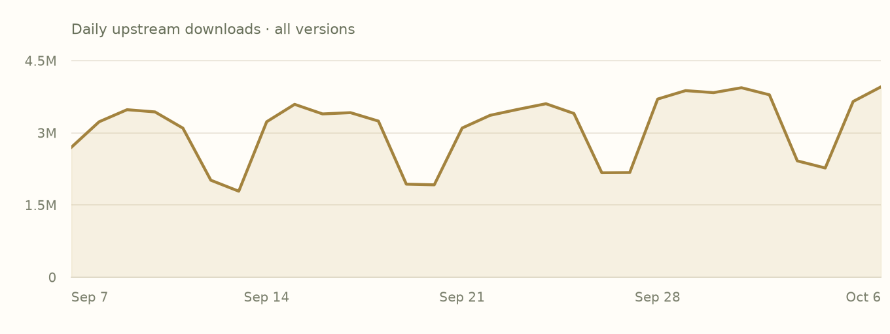
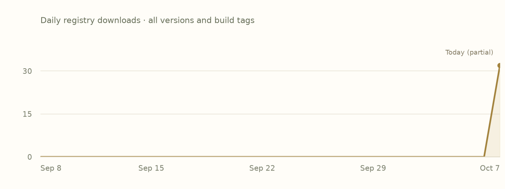

README
Recorded documentationUpstream documentation. Cargo examples describe the Rust crate; Add to project provides the Oven dependency.
README.md · Author-provided
TokioConf 2026 program and tickets are now available!
Tokio
A runtime for writing reliable, asynchronous, and slim applications with the Rust programming language. It is:
-
Fast: Tokio's zero-cost abstractions give you bare-metal performance.
-
Reliable: Tokio leverages Rust's ownership, type system, and concurrency model to reduce bugs and ensure thread safety.
-
Scalable: Tokio has a minimal footprint, and handles backpressure and cancellation naturally.
Crates.io MIT licensed Build Status Discord chat
Website | Guides | API Docs | Chat
Overview
Tokio is an event-driven, non-blocking I/O platform for writing asynchronous applications with the Rust programming language. At a high level, it provides a few major components:
- A multithreaded, work-stealing based task scheduler.
- A reactor backed by the operating system's event queue (epoll, kqueue, IOCP, etc.).
- Asynchronous TCP and UDP sockets.
These components provide the runtime components necessary for building an asynchronous application.
Example
A basic TCP echo server with Tokio.
Make sure you enable the full features of the tokio crate on Cargo.toml:
[dependencies]
tokio = { version = "1.53.2", features = ["full"] }
Then, on your main.rs:
use tokio::net::TcpListener;
use tokio::io::{AsyncReadExt, AsyncWriteExt};
#[tokio::main]
async fn main() -> Result<(), Box<dyn std::error::Error>> {
let listener = TcpListener::bind("127.0.0.1:8080").await?;
loop {
let (mut socket, _) = listener.accept().await?;
tokio::spawn(async move {
let mut buf = [0; 1024];
// In a loop, read data from the socket and write the data back.
loop {
let n = match socket.read(&mut buf).await {
// socket closed
Ok(0) => return,
Ok(n) => n,
Err(e) => {
eprintln!("failed to read from socket; err = {:?}", e);
return;
}
};
// Write the data back
if let Err(e) = socket.write_all(&buf[0..n]).await {
eprintln!("failed to write to socket; err = {:?}", e);
return;
}
}
});
}
}
More examples can be found here. For a larger "real world" example, see the mini-redis repository.
To see a list of the available feature flags that can be enabled, check our docs.
Getting Help
First, see if the answer to your question can be found in the Guides or the API documentation. If the answer is not there, there is an active community in the Tokio Discord server. We would be happy to try to answer your question. You can also ask your question on the discussions page.
Contributing
:balloon: Thanks for your help improving the project! We are so happy to have you! We have a contributing guide to help you get involved in the Tokio project.
Related Projects
In addition to the crates in this repository, the Tokio project also maintains several other libraries, including:
-
axum: A web application framework that focuses on ergonomics and modularity. -
hyper: A fast and correct HTTP/1.1 and HTTP/2 implementation for Rust. -
tonic: A gRPC over HTTP/2 implementation focused on high performance, interoperability, and flexibility. -
warp: A super-easy, composable, web server framework for warp speeds. -
tower: A library of modular and reusable components for building robust networking clients and servers. -
tracing(formerlytokio-trace): A framework for application-level tracing and async-aware diagnostics. -
mio: A low-level, cross-platform abstraction over OS I/O APIs that powerstokio. -
bytes: Utilities for working with bytes, including efficient byte buffers. -
loom: A testing tool for concurrent Rust code.
Changelog
The Tokio repository contains multiple crates. Each crate has its own changelog.
tokio- view changelogtokio-util- view changelogtokio-stream- view changelogtokio-macros- view changelogtokio-test- view changelog
Supported Rust Versions
Tokio will keep a rolling MSRV (minimum supported rust version) policy of at least 6 months. When increasing the MSRV, the new Rust version must have been released at least six months ago. The current MSRV is 1.71.
Note that the MSRV is not increased automatically, and only as part of a minor release. The MSRV history for past minor releases can be found below:
- 1.48 to now - Rust 1.71
- 1.39 to 1.47 - Rust 1.70
- 1.30 to 1.38 - Rust 1.63
- 1.27 to 1.29 - Rust 1.56
- 1.17 to 1.26 - Rust 1.49
- 1.15 to 1.16 - Rust 1.46
- 1.0 to 1.14 - Rust 1.45
Note that although we try to avoid the situation where a dependency transitively increases the MSRV of Tokio, we do not guarantee that this does not happen. However, every minor release will have some set of versions of dependencies that works with the MSRV of that minor release.
Release schedule
Tokio doesn't follow a fixed release schedule, but we typically make one minor release each month. We make patch releases for bugfixes as necessary.
Bug patching policy
For the purposes of making patch releases with bugfixes, we have designated certain minor releases as LTS (long term support) releases. Whenever a bug warrants a patch release with a fix for the bug, it will be backported and released as a new patch release for each LTS minor version. Our current LTS releases are:
1.51.x- LTS release until March 2027. (MSRV 1.71)1.53.x- LTS release until September 2027. (MSRV 1.71)
Each LTS release will continue to receive backported fixes for at least a year. If you wish to use a fixed minor release in your project, we recommend that you use an LTS release.
To use a fixed minor version, you can specify the version with a tilde. For
example, to specify that you wish to use the newest 1.51.x patch release, you
can use the following dependency specification:
tokio = { version = "~1.51", features = [...] }
Previous LTS releases
1.8.x- LTS release until February 2022.1.14.x- LTS release until June 2022.1.18.x- LTS release until June 2023.1.20.x- LTS release until September 2023.1.25.x- LTS release until March 2024.1.32.x- LTS release until September 2024.1.36.x- LTS release until March 2025.1.38.x- LTS release until July 2025.1.43.x- LTS release until March 2026.1.47.x- LTS release until September 2026.
License
This project is licensed under the MIT license.
Contribution
Unless you explicitly state otherwise, any contribution intentionally submitted for inclusion in Tokio by you shall be licensed as MIT, without any additional terms or conditions.
Features
Declared activationDefault activation follows the complete local feature graph. Forwarded edges remain declarations, not a resolved build.
| Feature | Default | Activation edges |
|---|---|---|
bytes | No |
|
default | Yesdefault |
|
fs | No |
|
full | No |
|
io-std | No |
|
io-uring | No |
|
io-util | No |
|
libc | No |
|
macros | No |
|
mio | No |
|
net | No |
|
parking_lot | No |
|
process | No |
|
rt | No |
|
rt-multi-thread | No |
|
schedule-latency | No |
|
signal | No |
|
signal-hook-registry | No |
|
socket2 | No |
|
sync | No |
|
taskdump | No |
|
test-util | No |
|
time | No |
|
tokio-macros | No |
|
tracing | No |
|
windows-sys | No |
|
Dependencies
Version requirementsVersion requirements are declarations, not resolved versions. Target conditions apply to each declaration individually.
| Dependency | Requirement & features | Activation |
|---|---|---|
crates-io/backtraceAlias: backtrace | ^0.3.58Default features: enabledRequests: | Optional · not enabled by defaults · when cfg(all(tokio_unstable, target_os = "linux")) |
crates-io/bytesAlias: bytes | ^1.2.1Default features: enabledRequests: | Optional · not enabled by defaults |
crates-io/io-uringAlias: io-uring | ^0.7.11Default features: disabledRequests: | Optional · not enabled by defaults · when cfg(all(tokio_unstable, target_os = "linux")) |
crates-io/libcAlias: libc | ^0.2.168Default features: enabledRequests: | Optional · not enabled by defaults · when cfg(all(tokio_unstable, target_os = "linux")) |
crates-io/libcAlias: libc | ^0.2.168Default features: enabledRequests: | Optional · not enabled by defaults · when cfg(target_os = "wasi") |
crates-io/libcAlias: libc | ^0.2.168Default features: enabledRequests: | Optional · not enabled by defaults · when cfg(unix) |
crates-io/mioAlias: mio | ^1.2.0Default features: disabledRequests: os-ext, os-poll | Optional · not enabled by defaults · when cfg(all(tokio_unstable, target_os = "linux")) |
crates-io/mioAlias: mio | ^1.2.0Default features: disabledRequests: | Optional · not enabled by defaults |
crates-io/parking_lotAlias: parking_lot | ^0.12.0Default features: enabledRequests: | Optional · not enabled by defaults |
crates-io/pin-project-liteAlias: pin-project-lite | ^0.2.11Default features: enabledRequests: | Required |
crates-io/signal-hook-registryAlias: signal-hook-registry | ^1.1.1Default features: enabledRequests: | Optional · not enabled by defaults · when cfg(unix) |
crates-io/slabAlias: slab | ^0.4.9Default features: enabledRequests: | Optional · not enabled by defaults · when cfg(all(tokio_unstable, target_os = "linux")) |
crates-io/socket2Alias: socket2 | ^0.6.3Default features: enabledRequests: all | Optional · not enabled by defaults · when cfg(any(not(target_family = "wasm"), all(target_os = "wasi", not(target_env = "p1")))) |
crates-io/tokio-macrosAlias: tokio-macros | ~2.7.0Default features: enabledRequests: | Optional · not enabled by defaults |
crates-io/tracingAlias: tracing | ^0.1.29Default features: disabledRequests: std | Optional · not enabled by defaults · when cfg(tokio_unstable) |
crates-io/windows-sysAlias: windows-sys | ^0.61Default features: enabledRequests: | Optional · not enabled by defaults · when cfg(windows) |
Dependents
Whole indexDirect declarations from all indexed versions. Requirements and target/feature conditions may select a different version than the one shown here.
- crates-io/async-compression 0.4.50Requires ^1.24.2 · alias tokio ·
- crates-io/async-compression 0.4.49Requires ^1.24.2 · alias tokio ·
- crates-io/aws-config 1.12.0Requires ^1.13.1 · alias tokio ·
- crates-io/aws-smithy-async 1.3.0Requires ^1.49.0 · alias tokio ·
- crates-io/aws-smithy-http-client 1.5.0Requires ^1.49 · alias tokio ·
- crates-io/aws-smithy-runtime 1.16.0Requires ^1.49.0 · alias tokio ·
- crates-io/aws-smithy-runtime-api 1.19.0Requires ^1.49.0 · alias tokio ·
- crates-io/aws-smithy-types 1.8.1Requires ^1.49.0 · alias tokio ·
- crates-io/axum 0.8.9Requires ^1.44 · alias tokio ·
- crates-io/axum 0.8.8Requires ^1.44 · alias tokio ·
- crates-io/backon 1.6.0Requires ^1 · alias tokio · cfg(not(target_arch = "wasm32"))
- crates-io/combine 4.6.8Requires ^0.2.3 · alias tokio-02-dep ·
- crates-io/combine 4.6.8Requires ^0.3 · alias tokio-03-dep ·
- crates-io/combine 4.6.8Requires ^1 · alias tokio-dep ·
- crates-io/criterion 0.8.2Requires ^1.0 · alias tokio ·
- crates-io/datafusion 53.1.0Requires ^1.48 · alias tokio ·
- crates-io/datafusion-catalog 53.1.0Requires ^1.48 · alias tokio ·
- crates-io/datafusion-common 53.1.0Requires ^1.48 · alias tokio ·
- crates-io/datafusion-common-runtime 53.1.0Requires ^1.48 · alias tokio ·
- crates-io/datafusion-datasource 53.1.0Requires ^1.48 · alias tokio ·
- crates-io/datafusion-datasource-arrow 53.1.0Requires ^1.48 · alias tokio ·
- crates-io/datafusion-datasource-csv 53.1.0Requires ^1.48 · alias tokio ·
- crates-io/datafusion-datasource-json 53.1.0Requires ^1.48 · alias tokio ·
- crates-io/datafusion-datasource-parquet 53.1.0Requires ^1.48 · alias tokio ·
- crates-io/datafusion-physical-expr 53.1.0Requires ^1.48 · alias tokio ·
- crates-io/datafusion-physical-plan 53.1.0Requires ^1.48 · alias tokio ·
- crates-io/datafusion-substrait 53.1.0Requires ^1.48 · alias tokio ·
- crates-io/deadpool 0.13.1Requires ^1.5 · alias tokio ·
- crates-io/deadpool 0.12.3Requires ^1.5 · alias tokio ·
- crates-io/deadpool-runtime 0.3.1Requires ^1.0 · alias tokio_1 ·
- crates-io/deadpool-runtime 0.1.4Requires ^1.0 · alias tokio_1 ·
- crates-io/fs-err 3.3.2Requires ^1.21 · alias tokio ·
- crates-io/h2 0.4.19Requires ^1 · alias tokio ·
- crates-io/h2 0.3.27Requires ^1 · alias tokio ·
- crates-io/hickory-net 0.26.3Requires ^1.36 · alias tokio ·
- crates-io/hickory-resolver 0.26.3Requires ^1.36 · alias tokio ·
- crates-io/http-body-util 0.1.5Requires ^1 · alias tokio ·
- crates-io/http-body-util 0.1.3Requires ^1 · alias tokio ·
- crates-io/hyper 1.11.1Requires ^1 · alias tokio ·
- crates-io/hyper 1.8.1Requires ^1 · alias tokio ·
- crates-io/hyper 0.14.32Requires ^1.27 · alias tokio ·
- crates-io/hyper-rustls 0.27.10Requires ^1.0 · alias tokio ·
- crates-io/hyper-rustls 0.24.2Requires ^1.0 · alias tokio ·
- crates-io/hyper-timeout 0.5.2Requires ^1.35 · alias tokio ·
- crates-io/hyper-tls 0.6.0Requires ^1 · alias tokio ·
- crates-io/hyper-util 0.1.21Requires ^1.13 · alias tokio ·
- crates-io/hyper-util 0.1.20Requires ^1 · alias tokio ·
- crates-io/indicatif 0.18.6Requires ^1 · alias tokio ·
- crates-io/inotify 0.11.5Requires ^1.40.0 · alias tokio ·
- crates-io/integer-encoding 3.0.4Requires ^1.0 · alias tokio ·
- crates-io/io-extras 0.18.4Requires ^1.6.0 · alias tokio ·
- crates-io/io-lifetimes 3.0.1Requires ^1.6.0 · alias tokio · cfg(not(target_os = "wasi"))
- crates-io/io-lifetimes 2.0.4Requires ^1.6.0 · alias tokio · cfg(not(target_os = "wasi"))
- crates-io/jsonschema 0.58.6Requires ^1 · alias tokio ·
- crates-io/kube-client 4.2.0Requires ^1.35 · alias tokio ·
- crates-io/multer 3.1.0Requires ^1.0 · alias tokio ·
- crates-io/object_store 0.14.2Requires ^1.29.0 · alias tokio ·
- crates-io/object_store 0.13.2Requires ^1.29.0 · alias tokio ·
- crates-io/opentelemetry-http 0.33.0Requires ^1 · alias tokio ·
- crates-io/opentelemetry-otlp 0.33.0Requires ^1 · alias tokio ·
- crates-io/opentelemetry_sdk 0.33.0Requires ^1 · alias tokio ·
- crates-io/parquet 58.4.0Requires ^1.0 · alias tokio ·
- crates-io/quick-xml 0.42.0Requires ^1.10 · alias tokio ·
- crates-io/quinn 0.11.12Requires ^1.28.1 · alias tokio ·
- crates-io/redis 1.7.1Requires ^1 · alias tokio ·
- crates-io/redis 1.7.1Requires ^1.51 · alias tokio · cfg(all(target_os = "wasi", target_env = "p2"))
- crates-io/reqwest 0.13.5Requires ^1.0 · alias tokio · cfg(not(all(target_arch = "wasm32", any(target_os = "unknown", target_os = "none"))))
- crates-io/sqlx-core 0.9.0Requires ^1.25.0 · alias tokio ·
- crates-io/sqlx-macros-core 0.9.0Requires ^1.25.0 · alias tokio ·
- crates-io/tokio-native-tls 0.3.1Requires ^1.0 · alias tokio ·
- crates-io/tokio-rustls 0.26.6Requires ^1.0 · alias tokio ·
- crates-io/tokio-rustls 0.24.1Requires ^1.0 · alias tokio ·
- crates-io/tokio-stream 0.1.19Requires ^1.38.0 · alias tokio ·
- crates-io/tokio-tungstenite 0.30.0Requires ^1.0.0 · alias tokio ·
- crates-io/tokio-util 0.7.19Requires ^1.47.0 · alias tokio ·
- crates-io/tonic 0.14.6Requires ^1 · alias tokio ·
- crates-io/tower 0.5.3Requires ^1.6.2 · alias tokio ·
- crates-io/tower-http 0.7.1Requires ^1.6 · alias tokio ·
- crates-io/tower-http 0.6.11Requires ^1.6 · alias tokio ·
- crates-io/wasm-bindgen-futures 0.4.79Requires ^1 · alias tokio · cfg(all(target_os = "emscripten", wasm_bindgen_unstable_tokio))
- crates-io/wasmtime-wasi 36.0.17Requires ^1.43.0 · alias tokio ·
- crates-io/wiremock 0.6.5Requires ^1.47.1 · alias tokio ·
- crates-io/zbus 5.19.0Requires ^1.37.0 · alias tokio ·
Indexed builds
Bound assetsExact indexed bindings; units retain their individual identities. Attestation links are registry references, not an independent signature verification by this site.
| Target / profile | Toolchain / features | Evidence |
|---|---|---|
aarch64-apple-darwindebug | rustc 1.98.0 (88d9e12ae 2026-08-18)bytes, default, io-util, libc, macros, mio, net, rt, socket2, sync, time, tokio-macros | Inspect units
|
aarch64-apple-darwindebug | rustc 1.98.0 (88d9e12ae 2026-08-18)bytes, default, io-util, libc, mio, net, rt, socket2, sync, time | Inspect units
|
aarch64-apple-darwindebug | rustc 1.98.0 (88d9e12ae 2026-08-18)bytes, default, io-util, macros, rt, sync, time, tokio-macros | Inspect units
|
aarch64-apple-darwindebug | rustc 1.98.0 (88d9e12ae 2026-08-18)bytes, default, io-util, sync | Inspect units
|
aarch64-apple-darwindebug | rustc 1.98.0 (88d9e12ae 2026-08-18)bytes, io-util, libc, mio, net, socket2 | Inspect units
|
aarch64-apple-darwindebug | rustc 1.98.0 (88d9e12ae 2026-08-18)default | Inspect units
|
aarch64-apple-darwindebug | rustc 1.98.0 (88d9e12ae 2026-08-18)default, libc, macros, mio, net, rt, socket2, sync, time, tokio-macros | Inspect units
|
aarch64-apple-darwindebug | rustc 1.98.0 (88d9e12ae 2026-08-18)default, libc, mio, net, rt, socket2, sync, time | Inspect units
|
aarch64-apple-darwindebug | rustc 1.98.0 (88d9e12ae 2026-08-18)default, sync | Inspect units
|
aarch64-apple-darwindebug | rustc 1.98.0 (88d9e12ae 2026-08-18)default, sync, time | Inspect units
|
aarch64-apple-darwindebug | rustc 1.98.0 (88d9e12ae 2026-08-18)default, time | Inspect units
|
aarch64-apple-darwinrelease | rustc 1.98.0 (88d9e12ae 2026-08-18)bytes, default, io-util, libc, macros, mio, net, rt, socket2, sync, time, tokio-macros | Inspect units
|
aarch64-apple-darwinrelease | rustc 1.98.0 (88d9e12ae 2026-08-18)bytes, default, io-util, libc, mio, net, rt, socket2, sync, time | Inspect units
|
aarch64-apple-darwinrelease | rustc 1.98.0 (88d9e12ae 2026-08-18)bytes, default, io-util, macros, rt, sync, time, tokio-macros | Inspect units
|
aarch64-apple-darwinrelease | rustc 1.98.0 (88d9e12ae 2026-08-18)bytes, default, io-util, sync | Inspect units
|
aarch64-apple-darwinrelease | rustc 1.98.0 (88d9e12ae 2026-08-18)bytes, io-util, libc, mio, net, socket2 | Inspect units
|
aarch64-apple-darwinrelease | rustc 1.98.0 (88d9e12ae 2026-08-18)default | Inspect units
|
aarch64-apple-darwinrelease | rustc 1.98.0 (88d9e12ae 2026-08-18)default, libc, macros, mio, net, rt, socket2, sync, time, tokio-macros | Inspect units
|
aarch64-apple-darwinrelease | rustc 1.98.0 (88d9e12ae 2026-08-18)default, libc, mio, net, rt, socket2, sync, time | Inspect units
|
aarch64-apple-darwinrelease | rustc 1.98.0 (88d9e12ae 2026-08-18)default, sync | Inspect units
|
aarch64-apple-darwinrelease | rustc 1.98.0 (88d9e12ae 2026-08-18)default, sync, time | Inspect units
|
aarch64-apple-darwinrelease | rustc 1.98.0 (88d9e12ae 2026-08-18)default, time | Inspect units
|
x86_64-unknown-linux-gnudebug | rustc 1.98.0 (88d9e12ae 2026-08-18)bytes, default, io-util, libc, macros, mio, net, rt, rt-multi-thread, socket2, time, tokio-macros | Inspect units
|
x86_64-unknown-linux-gnudebug | rustc 1.98.0 (88d9e12ae 2026-08-18)bytes, default, io-util, libc, macros, mio, net, rt, socket2, sync, time, tokio-macros | Inspect units
|
x86_64-unknown-linux-gnudebug | rustc 1.98.0 (88d9e12ae 2026-08-18)bytes, default, io-util, libc, mio, net, rt, socket2, sync, time | Inspect units
|
x86_64-unknown-linux-gnudebug | rustc 1.98.0 (88d9e12ae 2026-08-18)bytes, default, io-util, macros, rt, sync, time, tokio-macros | Inspect units
|
x86_64-unknown-linux-gnudebug | rustc 1.98.0 (88d9e12ae 2026-08-18)bytes, default, io-util, sync | Inspect units
|
x86_64-unknown-linux-gnudebug | rustc 1.98.0 (88d9e12ae 2026-08-18)bytes, io-util, libc, mio, net, socket2 | Inspect units
|
x86_64-unknown-linux-gnudebug | rustc 1.98.0 (88d9e12ae 2026-08-18)default | Inspect units
|
x86_64-unknown-linux-gnudebug | rustc 1.98.0 (88d9e12ae 2026-08-18)default, libc, macros, mio, net, rt, socket2, sync, time, tokio-macros | Inspect units
|
x86_64-unknown-linux-gnudebug | rustc 1.98.0 (88d9e12ae 2026-08-18)default, libc, mio, net, rt, socket2, sync, time | Inspect units
|
x86_64-unknown-linux-gnudebug | rustc 1.98.0 (88d9e12ae 2026-08-18)default, libc, mio, net, socket2 | Inspect units
|
x86_64-unknown-linux-gnudebug | rustc 1.98.0 (88d9e12ae 2026-08-18)default, sync | Inspect units
|
x86_64-unknown-linux-gnudebug | rustc 1.98.0 (88d9e12ae 2026-08-18)default, sync, time | Inspect units
|
x86_64-unknown-linux-gnudebug | rustc 1.98.0 (88d9e12ae 2026-08-18)default, time | Inspect units
|
x86_64-unknown-linux-gnurelease | rustc 1.98.0 (88d9e12ae 2026-08-18)bytes, default, io-util, libc, macros, mio, net, rt, rt-multi-thread, socket2, time, tokio-macros | Inspect units
|
x86_64-unknown-linux-gnurelease | rustc 1.98.0 (88d9e12ae 2026-08-18)bytes, default, io-util, libc, macros, mio, net, rt, socket2, sync, time, tokio-macros | Inspect units
|
x86_64-unknown-linux-gnurelease | rustc 1.98.0 (88d9e12ae 2026-08-18)bytes, default, io-util, libc, mio, net, rt, socket2, sync, time | Inspect units
|
x86_64-unknown-linux-gnurelease | rustc 1.98.0 (88d9e12ae 2026-08-18)bytes, default, io-util, macros, rt, sync, time, tokio-macros | Inspect units
|
x86_64-unknown-linux-gnurelease | rustc 1.98.0 (88d9e12ae 2026-08-18)bytes, default, io-util, sync | Inspect units
|
x86_64-unknown-linux-gnurelease | rustc 1.98.0 (88d9e12ae 2026-08-18)bytes, io-util, libc, mio, net, socket2 | Inspect units
|
x86_64-unknown-linux-gnurelease | rustc 1.98.0 (88d9e12ae 2026-08-18)default | Inspect units
|
x86_64-unknown-linux-gnurelease | rustc 1.98.0 (88d9e12ae 2026-08-18)default, libc, macros, mio, net, rt, socket2, sync, time, tokio-macros | Inspect units
|
x86_64-unknown-linux-gnurelease | rustc 1.98.0 (88d9e12ae 2026-08-18)default, libc, mio, net, rt, socket2, sync, time | Inspect units
|
x86_64-unknown-linux-gnurelease | rustc 1.98.0 (88d9e12ae 2026-08-18)default, libc, mio, net, socket2 | Inspect units
|
x86_64-unknown-linux-gnurelease | rustc 1.98.0 (88d9e12ae 2026-08-18)default, sync | Inspect units
|
x86_64-unknown-linux-gnurelease | rustc 1.98.0 (88d9e12ae 2026-08-18)default, sync, time | Inspect units
|
x86_64-unknown-linux-gnurelease | rustc 1.98.0 (88d9e12ae 2026-08-18)default, time | Inspect units
|
Versions & release notes
Indexed versionsDates below record adoption into the registry, not upstream publication. Changelogs are shown as packaged; they can cover multiple releases.
| Version | Adopted | Upstream |
|---|---|---|
| 1.53.2 | 2026-10-06 | Upstream record |
| 1.53.1 | 2026-10-06 | Upstream record |
| 1.52.3 | 2026-10-06 | Upstream record |
CHANGELOG.md · Author-provided
1.53.2 (October 3rd, 2026)
Fixed
- fs: handle integer overflow in buffered relative seek (#8574)
- io: revert "always cleanup
AsyncFdregistration list on deregister" (#8540) - process: unregister Windows wait before closing child handle (#8564)
- rt: drop blocking pool mutex before shutting down rejected task (#8562)
- sync: fix mpsc index wraparound in block reclamation (#8546)
- sync: forget mpsc
Permitbefore sending value (#8560) - sync: validate
MAX_PERMITSinSemaphore::acquire(#8548) - sync: wake broadcast
Sender::closedoutside mutex (#8558) - task: drop replaced waker outside lock in
JoinSet(#8554) - time: drop timer lock before dropping waker in
clear_entry(#8552) - time: expire timers directly on shutdown without rotating wheel (#8570)
Fixed (unstable)
- fs: clamp
io_uringread length tou32::MAX(#8572) - rt: ignore
current_threadtask dumps from other runtimes (#8544) - rt: preserve
io_uringcontext if a completion waker panics (#8566) - sync: fix semaphore use-after-free and permit leak on tracing panic (#8542)
- taskdump: restore deferred leaf wakes during capture (#8445)
- time: drop stored waker when cancelling alt timer entry (#8550)
1.53.1 (July 20th, 2026)
Fixed
- signal: restore MSRV by removing
OnceLock::waitfrom the Windows handler (#8300)
Fixed (unstable)
- time: fix alt timer cancellation and insertion race (#8252)
Documented
- runtime: remove dead link definition in Runtime::block_on (#8301)
1.53.0 (July 17th, 2026)
Added
- fs: implement
From<OwnedFd>andFrom<OwnedHandle>forFile(#8266) - metrics: add task schedule latency metric (#7986)
- net: add
SocketAddrmethods to Unix sockets (#8144)
Changed
- io: add
#[inline]to IO trait impls for in-memory types (#8242) - net: implement UCred::pid on FreeBSD (#8086)
- net: support Nuttx target os (#8259)
- signal: refactor global variables on Windows (#8231)
- sync:
mpsc::{Receiver,UnboundedReceiver}now drops waker on drop, even if there are still senders (#8095) - taskdump: support taskdumps on s390x (#8192)
- time: add
#[track_caller]totimeout_at()(#8077) - time: consolidate mutex locks on spurious poll (#8124)
- time: defer waker clone on spurious poll (#8107)
- time: move lazy-registration state into
Sleep(#8132) - tracing: remove unnecessary span clone (#8126)
Fixed
- io: do not treat zero-length reads as EOF in
Chain(#8251) - net: use getpeereid for QNX peer credentials (#8270)
- runtime: avoid illegal state in
FastRand(#8078) - sync: wake mpsc receiver when a queued
reserve[_many]returns permits (#8260) - taskdump: skip double wake on
Trace::capture/Trace::trace_with(#8043) - time: avoid stack overflow in runtime constructor (#8093)
- time (alt timer): ensure timers stay in the same runtime after
.reset()(#8169)
IO uring (unstable)
- fs: use io-uring for
fs::try_exists(#8080) - fs: use io-uring for renaming files (#7800)
- rt: flush io-uring CQE in case of CQE overflow (#8277)
Documented
- docs: clarify cancel safety wording (#8181)
- fs: clarify
create_dir_allsucceeds if path exists (#8149) - io: add warning about stdout reordering with multiple handles (#8276)
- net: document pipe
try_read*/try_write*readiness behavior (#8032) - runtime: document interaction with fork() (#8202)
- sync: clarify broadcast lagging semantics (#8239)
- sync: document memory ordering guarantees for Semaphore (#8119)
- task: explain why
yield_nowdefers its waker (#8254) - time: add panic docs to
timeout_at()(#8077) - time: fix reversed poll order in timeout doc (#8214)
1.52.4 (July 16th, 2026)
Fixed
- runtime: don't skip the driver when
before_parkschedules work (#8222)
Fixed (unstable)
- taskdump: remove crate disambiguators from output (#8264)
1.52.3 (May 8th, 2026)
Fixed
- sync: fix underflow in mpsc channel
len()(#8062) - sync: notify receivers in mpsc
OwnedPermit::release()method (#8075) - sync: require that an
RwLockhasmax_readers != 0(#8076) - sync: return
Emptyfromtry_recv()when mpsc is closed with outstanding permits (#8074)
1.52.2 (May 4th, 2026)
This release reverts the LIFO slot stealing change introduced in 1.51.0 (#7431), due to its performance impact. (#8100)
1.52.1 (April 16th, 2026)
Fixed
- runtime: revert #7757 to fix a regression that causes
spawn_blockingto hang (#8057)
1.52.0 (April 14th, 2026)
Added
- io:
AioSource::register_borrowedfor I/O safety support (#7992) - net: add
try_iofunction tounix::pipesender and receiver types (#8030)
Added (unstable)
- runtime:
Builder::enable_eager_driver_handoffsetting enable eager hand off of the I/O and time drivers before polling tasks (#8010) - taskdump: add
trace_with()for customized task dumps (#8025) - taskdump: allow
impl FnMut()intrace_withinstead of justfn()(#8040) - fs: support
io_uringinAsyncReadforFile(#7907)
Changed
- runtime: improve
spawn_blockingscalability with sharded queue (#7757) - runtime: use
compare_exchange_weak()in worker queue (#8028)
Fixed
- runtime: overflow second half of tasks when local queue is filled instead of first half (#8029)
Documented
- docs: fix typo in
oneshot::Sender::senddocs (#8026) - docs: hide #[tokio::main] attribute in the docs of
sync::watch(#8035) - net: add docs on
ConnectionRefusederrors with UDP sockets (#7870)
1.51.5 (October 3rd, 2026)
Fixed
- fs: handle integer overflow in buffered relative seek (#8574)
- io: revert "always cleanup
AsyncFdregistration list on deregister" (#8540) - process: unregister Windows wait before closing child handle (#8564)
- rt: drop blocking pool mutex before shutting down rejected task (#8562)
- sync: fix mpsc index wraparound in block reclamation (#8546)
- sync: forget mpsc
Permitbefore sending value (#8560) - sync: validate
MAX_PERMITSinSemaphore::acquire(#8548) - sync: wake broadcast
Sender::closedoutside mutex (#8558) - task: drop replaced waker outside lock in
JoinSet(#8554) - time: drop timer lock before dropping waker in
clear_entry(#8552) - time: expire timers directly on shutdown without rotating wheel (#8570)
Fixed (unstable)
- rt: ignore
current_threadtask dumps from other runtimes (#8544) - rt: preserve
io_uringcontext if a completion waker panics (#8566) - sync: fix semaphore use-after-free and permit leak on tracing panic (#8542)
- time: drop stored waker when cancelling alt timer entry (#8550)
1.51.4 (July 16th, 2026)
Fixed
- runtime: don't skip the driver when
before_parkschedules work (#8222)
1.51.3 (May 8th, 2026)
Fixed
- sync: fix underflow in mpsc channel
len()(#8062) - sync: notify receivers in mpsc
OwnedPermit::release()method (#8075) - sync: require that an
RwLockhasmax_readers != 0(#8076) - sync: return
Emptyfromtry_recv()when mpsc is closed with outstanding permits (#8074)
1.51.2 (May 4th, 2026)
This release reverts the LIFO slot stealing change introduced in 1.51.0 (#7431), due to its performance impact. (#8100)
1.51.1 (April 8th, 2026)
Fixed
- sync: fix semaphore reopens after forget (#8021)
- net: surface errors from
SO_ERRORonrecvfor UDP sockets on Linux (#8001)
Fixed (unstable)
- metrics: fix
worker_local_schedule_counttest (#8008) - rt: do not leak fd when cancelling io_uring open operation (#7983)
1.51.0 (April 3rd, 2026)
Added
- net: implement
get_peer_credon Hurd (#7989) - runtime: add
tokio::runtime::worker_index()(#7921) - runtime: add runtime name (#7924)
- runtime: stabilize
LocalRuntime(#7557) - wasm: add wasm32-wasip2 networking support (#7933)
Changed
- runtime: steal tasks from the LIFO slot (#7431)
Fixed
- docs: do not show "Available on non-loom only." doc label (#7977)
- macros: improve overall macro hygiene (#7997)
- sync: fix
notify_waiterspriority inNotify(#7996) - sync: fix panic in
Chan::recv_manywhen called with non-empty vector on closed channel (#7991)
1.50.0 (Mar 3rd, 2026)
Added
Changed
- io: add optimizer hint that
memchrreturns in-bounds pointer (#7792) - io: implement vectored writes for
write_buf(#7871) - runtime: panic when
event_intervalis set to 0 (#7838) - runtime: shorten default thread name to fit in Linux limit (#7880)
- signal: remember the result of
SetConsoleCtrlHandler(#7833) - signal: specialize windows
Registry(#7885)
Fixed
- io: always cleanup
AsyncFdregistration list on deregister (#7773) - macros: remove (most) local
usedeclarations intokio::select!(#7929) - net: fix
GET_BUF_SIZEconstant fortarget_os = "android"(#7889) - runtime: avoid redundant unpark in current_thread scheduler (#7834)
- runtime: don't park in
current_threadifbefore_parkdefers waker (#7835) - io: fix write readiness on ESP32 on short writes (#7872)
- runtime: wake deferred tasks before entering
block_in_place(#7879) - sync: drop rx waker when oneshot receiver is dropped (#7886)
- runtime: fix double increment of
num_idle_threadson shutdown (#7910, #7918, #7922)
Unstable
- fs: check for io-uring opcode support (#7815)
- runtime: avoid lock acquisition after uring init (#7850)
Documented
- docs: update outdated unstable features section (#7839)
- io: clarify the behavior of
AsyncWriteExt::shutdown()(#7908) - io: explain how to flush stdout/stderr (#7904)
- io: fix incorrect and confusing
AsyncWritedocumentation (#7875) - rt: clarify the documentation of
Runtime::spawn(#7803) - rt: fix missing quotation in docs (#7925)
- runtime: correct the default thread name in docs (#7896)
- runtime: fix
event_intervaldoc (#7932) - sync: clarify RwLock fairness documentation (#7919)
- sync: clarify that
recvreturnsNoneonce closed and no more messages (#7920) - task: clarify when to use
spawn_blockingvs dedicated threads (#7923) - task: doc that task drops before
JoinHandlecompletion (#7825) - signal: guarantee that listeners never return
None(#7869) - task: fix task module feature flags in docs (#7891)
- task: fix two typos (#7913)
- task: improve the docs of
Builder::spawn_local(#7828) - time: add docs about auto-advance and when to use sleep (#7858)
- util: fix typo in docs (#7926)
1.49.0 (January 3rd, 2026)
Added
- net: add support for
TCLASSoption on IPv6 (#7781) - runtime: stabilize
runtime::id::Id(#7125) - task: implement
ExtendforJoinSet(#7195) - task: stabilize the
LocalSet::id()(#7776)
Changed
- net: deprecate
{TcpStream,TcpSocket}::set_linger(#7752)
Fixed
- macros: fix the hygiene issue of
join!andtry_join!(#7766) - runtime: revert "replace manual vtable definitions with Wake" (#7699)
- sync: return
TryRecvError::DisconnectedfromReceiver::try_recvafterReceiver::close(#7686) - task: remove unnecessary trait bounds on the
Debugimplementation (#7720)
Unstable
- fs: handle
EINTRinfs::writefor io-uring (#7786) - fs: support io-uring with
tokio::fs::read(#7696) - runtime: disable io-uring on
EPERM(#7724) - time: add alternative timer for better multicore scalability (#7467)
Documented
- docs: fix a typos in
bounded.rsandpark.rs(#7817) - io: add
SyncIoBridgecross-references tocopyandcopy_buf(#7798) - io: doc that
AsyncWritedoes not inherit fromstd::io::Write(#7705) - metrics: clarify that
num_alive_tasksis not strongly consistent (#7614) - net: clarify the cancellation safety of the
TcpStream::peek(#7305) - net: clarify the drop behavior of
unix::OwnedWriteHalf(#7742) - net: clarify the platform-dependent backlog in
TcpSocketdocs (#7738) - runtime: mention
LocalRuntimeinnew_current_threaddocs (#7820) - sync: add missing period to
mpsc::Sender::try_senddocs (#7721) - sync: clarify the cancellation safety of
oneshot::Receiver(#7780) - sync: improve the docs for the
errorsof mpsc (#7722) - task: add example for
spawn_localusage on local runtime (#7689)
1.48.0 (October 14th, 2025)
The MSRV is increased to 1.71.
Added
- fs: add
File::max_buf_size(#7594) - io: export
ChainofAsyncReadExt::chain(#7599) - net: add
SocketAddr::as_abstract_name(#7491) - net: add
TcpStream::quickackandTcpStream::set_quickack(#7490) - net: implement
AsRef<Self>forTcpStreamandUnixStream(#7573) - task: add
LocalKey::try_get(#7666) - task: implement
Ordfortask::Id(#7530)
Changed
- deps: bump windows-sys to version 0.61 (#7645)
- fs: preserve
max_buf_sizewhen cloning aFile(#7593) - macros: suppress
clippy::unwrap_in_resultin#[tokio::main](#7651) - net: remove
PollEventednoise from Debug formats (#7675) - process: upgrade
Command::spawn_withto useFnOnce(#7511) - sync: remove inner mutex in
SetOnce(#7554) - sync: use
UnsafeCell::get_mutinMutex::get_mutandRwLock::get_mut(#7569) - time: reduce the generated code size of
Timeout<T>::poll(#7535)
Fixed
- macros: fix hygiene issue in
join!andtry_join!(#7638) - net: fix copy/paste errors in udp peek methods (#7604)
- process: fix error when runtime is shut down on nightly-2025-10-12 (#7672)
- runtime: use release ordering in
wake_by_ref()even if already woken (#7622) - sync: close the
broadcast::Senderinbroadcast::Sender::new()(#7629) - sync: fix implementation of unused
RwLock::try_*methods (#7587)
Unstable
- tokio: use cargo features instead of
--cfgflags fortaskdumpandio_uring(#7655, #7621) - fs: support
io_uringinfs::write(#7567) - fs: support
io_uringwithFile::open()(#7617) - fs: support
io_uringwithOpenOptions(#7321) - macros: add
localruntime flavor (#7375, #7597)
Documented
- io: clarify the zero capacity case of
AsyncRead::poll_read(#7580) - io: fix typos in the docs of
AsyncFdreadiness guards (#7583) - net: clarify socket gets closed on drop (#7526)
- net: clarify the behavior of
UCred::pid()on Cygwin (#7611) - net: clarify the supported platform of
set_reuseport()andreuseport()(#7628) - net: qualify that
SO_REUSEADDRis only set on Unix (#7533) - runtime: add guide for choosing between runtime types (#7635)
- runtime: clarify the behavior of
Handle::block_on(#7665) - runtime: clarify the edge case of
Builder::global_queue_interval()(#7605) - sync: clarify bounded channel panic behavior (#7641)
- sync: clarify the behavior of
tokio::sync::watch::Receiver(#7584) - sync: document cancel safety on
SetOnce::wait(#7506) - sync: fix the docs of
parking_lotfeature flag (#7663) - sync: improve the docs of
UnboundedSender::send(#7661) - sync: improve the docs of
sync::watch(#7601) - sync: reword allocation failure paragraph in broadcast docs (#7595)
- task: clarify the behavior of several
spawn_localmethods (#7669) - task: clarify the task ID reuse guarantees (#7577)
- task: improve the example of
poll_proceed(#7586)
1.47.5 (May 7th, 2026)
Fixed
- sync: fix underflow in mpsc channel
len()(#8062) - sync: notify receivers in mpsc
OwnedPermit::release()method (#8075) - sync: require that an
RwLockhasmax_readers != 0(#8076) - sync: return
Emptyfromtry_recv()when mpsc is closed with outstanding permits (#8074)
1.47.4 (April 2nd, 2026)
Fixed
- sync: fix panic in
Chan::recv_manywhen called with non-empty vector on closed channel (#7991)
1.47.3 (January 3rd, 2026)
Fixed
- sync: return
TryRecvError::DisconnectedfromReceiver::try_recvafterReceiver::close(#7686)
1.47.2 (October 14th, 2025)
Fixed
- runtime: use release ordering in
wake_by_ref()even if already woken (#7622) - sync: close the
broadcast::Senderinbroadcast::Sender::new()(#7629) - macros: fix hygiene issue in
join!andtry_join!(#7638) - process: fix error when runtime is shut down on nightly-2025-10-12 (#7672)
1.47.1 (August 1st, 2025)
Fixed
- process: fix panic from spurious pidfd wakeup (#7494)
- sync: fix broken link of Python
asyncio.EventinSetOncedocs (#7485)
1.47.0 (July 25th, 2025)
This release adds poll_proceed and cooperative to the coop module for
cooperative scheduling, adds SetOnce to the sync module which provides
similar functionality to [std::sync::OnceLock], and adds a new method
sync::Notify::notified_owned() which returns an OwnedNotified without
a lifetime parameter.
Added
- coop: add
cooperativeandpoll_proceed(#7405) - sync: add
SetOnce(#7418) - sync: add
sync::Notify::notified_owned()(#7465)
Changed
- deps: upgrade windows-sys 0.52 → 0.59 (#7117)
- deps: update to socket2 v0.6 (#7443)
- sync: improve
AtomicWaker::wakeperformance (#7450)
Documented
- metrics: fix listed feature requirements for some metrics (#7449)
- runtime: improve safety comments of
Readiness<'_>(#7415)
1.46.1 (July 4th, 2025)
This release fixes incorrect spawn locations in runtime task hooks for tasks
spawned using tokio::spawn rather than Runtime::spawn. This issue only
affected the spawn location in TaskMeta::spawned_at, and did not affect task
locations in Tracing events.
Unstable
- runtime: add
TaskMeta::spawned_attracking where a task was spawned (#7440)
1.46.0 (July 2nd, 2025)
Fixed
- net: fixed
TcpStream::shutdownincorrectly returning an error on macOS (#7290)
Added
- sync:
mpsc::OwnedPermit::{same_channel, same_channel_as_sender}methods (#7389) - macros:
biasedoption forjoin!andtry_join!, similar toselect!(#7307) - net: support for cygwin (#7393)
- net: support
pipe::OpenOptions::read_writeon Android (#7426) - net: add
Cloneimplementation fornet::unix::SocketAddr(#7422)
Changed
- runtime: eliminate unnecessary lfence while operating on
queue::Local<T>(#7340) - task: disallow blocking in
LocalSet::{poll,drop}(#7372)
Unstable
- runtime: add
TaskMeta::spawn_locationtracking where a task was spawned (#7417) - runtime: removed borrow from
LocalOptionsparameter toruntime::Builder::build_local(#7346)
Documented
- io: clarify behavior of seeking when
start_seekis not used (#7366) - io: document cancellation safety of
AsyncWriteExt::flush(#7364) - net: fix docs for
recv_buffer_sizemethod (#7336) - net: fix broken link of
RawFdinTcpSocketdocs (#7416) - net: update
AsRawFddoc link to current Rust stdlib location (#7429) - readme: fix double period in reactor description (#7363)
- runtime: add doc note that
on_*_task_pollis unstable (#7311) - sync: update broadcast docs on allocation failure (#7352)
- time: add a missing panic scenario of
time::advance(#7394)
1.45.1 (May 24th, 2025)
This fixes a regression on the wasm32-unknown-unknown target, where code that
previously did not panic due to calls to Instant::now() started failing. This
is due to the stabilization of the first time-based metric.
Fixed
- Disable time-based metrics on wasm32-unknown-unknown (#7322)
1.45.0 (May 5th, 2025)
Added
- metrics: stabilize
worker_total_busy_duration,worker_park_count, andworker_unpark_count(#6899, #7276) - process: add
Command::spawn_with(#7249)
Changed
- io: do not require
Unpinfor some trait impls (#7204) - rt: mark
runtime::Handleas unwind safe (#7230) - time: revert internal sharding implementation (#7226)
Unstable
- rt: remove alt multi-threaded runtime (#7275)
1.44.2 (April 5th, 2025)
This release fixes a soundness issue in the broadcast channel. The channel
accepts values that are Send but !Sync. Previously, the channel called
clone() on these values without synchronizing. This release fixes the channel
by synchronizing calls to .clone() (Thanks Austin Bonander for finding and
reporting the issue).
Fixed
- sync: synchronize
clone()call in broadcast channel (#7232)
1.44.1 (March 13th, 2025)
Fixed
- rt: skip defer queue in
block_in_placecontext (#7216)
1.44.0 (March 7th, 2025)
This release changes the from_std method on sockets to panic if a blocking
socket is provided. We determined this change is not a breaking change as Tokio is not
intended to operate using blocking sockets. Doing so results in runtime hangs and
should be considered a bug. Accidentally passing a blocking socket to Tokio is one
of the most common user mistakes. If this change causes an issue for you, please
comment on #7172.
Added
- coop: add
task::coopmodule (#7116) - process: add
Command::get_kill_on_drop()(#7086) - sync: add
broadcast::Sender::closed(#6685, #7090) - sync: add
broadcast::WeakSender(#7100) - sync: add
oneshot::Receiver::is_empty()(#7153) - sync: add
oneshot::Receiver::is_terminated()(#7152)
Fixed
- fs: empty reads on
Fileshould not start a background read (#7139) - process: calling
start_killon exited child should not fail (#7160) - signal: fix
CTRL_CLOSE,CTRL_LOGOFF,CTRL_SHUTDOWNon windows (#7122) - sync: properly handle panic during mpsc drop (#7094)
Changes
- runtime: clean up magic number in registration set (#7112)
- coop: make coop yield using waker defer strategy (#7185)
- macros: make
select!budget-aware (#7164) - net: panic when passing a blocking socket to
from_std(#7166) - io: clean up buffer casts (#7142)
Changes to unstable APIs
- rt: add before and after task poll callbacks (#7120)
- tracing: make the task tracing API unstable public (#6972)
Documented
- docs: fix nesting of sections in top-level docs (#7159)
- fs: rename symlink and hardlink parameter names (#7143)
- io: swap reader/writer in simplex doc test (#7176)
- macros: docs about
select!alternatives (#7110) - net: rename the argument for
send_to(#7146) - process: add example for reading
Childstdout (#7141) - process: clarify
Child::killbehavior (#7162) - process: fix grammar of the
ChildStdinstruct doc comment (#7192) - runtime: consistently use
worker_threadsinstead ofcore_threads(#7186)
1.43.4 (January 3rd, 2026)
Fixed
- sync: return
TryRecvError::DisconnectedfromReceiver::try_recvafterReceiver::close(#7686)
1.43.3 (October 14th, 2025)
Fixed
- runtime: use release ordering in
wake_by_ref()even if already woken (#7622) - sync: close the
broadcast::Senderinbroadcast::Sender::new()(#7629) - process: fix error when runtime is shut down on nightly-2025-10-12 (#7672)
1.43.2 (August 1st, 2025)
Fixed
- process: fix panic from spurious pidfd wakeup (#7494)
1.43.1 (April 5th, 2025)
This release fixes a soundness issue in the broadcast channel. The channel
accepts values that are Send but !Sync. Previously, the channel called
clone() on these values without synchronizing. This release fixes the channel
by synchronizing calls to .clone() (Thanks Austin Bonander for finding and
reporting the issue).
Fixed
- sync: synchronize
clone()call in broadcast channel (#7232)
1.43.0 (Jan 8th, 2025)
Added
- net: add
UdpSocket::peekmethods (#7068) - net: add support for Haiku OS (#7042)
- process: add
Command::into_std()(#7014) - signal: add
SignalKind::infoon illumos (#6995) - signal: add support for realtime signals on illumos (#7029)
Fixed
- io: don't call
set_lenbefore initializing vector inBlocking(#7054) - macros: suppress
clippy::needless_returnin#[tokio::main](#6874) - runtime: fix thread parking on WebAssembly (#7041)
Changes
- chore: use unsync loads for
unsync_load(#7073) - io: use
Buf::put_bytesinRepeatread impl (#7055) - task: drop the join waker of a task eagerly (#6986)
Changes to unstable APIs
- metrics: improve flexibility of H2Histogram Configuration (#6963)
- taskdump: add accessor methods for backtrace (#6975)
Documented
- io: clarify
ReadBuf::uninitallows initialized buffers as well (#7053) - net: fix ambiguity in
TcpStream::try_write_vectoreddocs (#7067) - runtime: fix
LocalRuntimedoc links (#7074) - sync: extend documentation for
watch::Receiver::wait_for(#7038) - sync: fix typos in
OnceCelldocs (#7047)
1.42.1 (April 8th, 2025)
This release fixes a soundness issue in the broadcast channel. The channel
accepts values that are Send but !Sync. Previously, the channel called
clone() on these values without synchronizing. This release fixes the channel
by synchronizing calls to .clone() (Thanks Austin Bonander for finding and
reporting the issue).
Fixed
- sync: synchronize
clone()call in broadcast channel (#7232)
1.42.0 (Dec 3rd, 2024)
Added
- io: add
AsyncFd::{try_io, try_io_mut}(#6967)
Fixed
- io: avoid
ptr->ref->ptrroundtrip in RegistrationSet (#6929) - runtime: do not defer
yield_nowinsideblock_in_place(#6999)
Changes
- io: simplify io readiness logic (#6966)
Documented
- net: fix docs for
tokio::net::unix::{pid_t, gid_t, uid_t}(#6791) - time: fix a typo in
Instantdocs (#6982)
1.41.1 (Nov 7th, 2024)
Fixed
- metrics: fix bug with wrong number of buckets for the histogram (#6957)
- net: display
netrequirement fornet::UdpSocketin docs (#6938) - net: fix typo in
TcpStreaminternal comment (#6944)
1.41.0 (Oct 22nd, 2024)
Added
- metrics: stabilize
global_queue_depth(#6854, #6918) - net: add conversions for unix
SocketAddr(#6868) - sync: add
watch::Sender::sender_count(#6836) - sync: add
mpsc::Receiver::blocking_recv_many(#6867) - task: stabilize
Idapis (#6793, #6891)
Added (unstable)
- metrics: add H2 Histogram option to improve histogram granularity (#6897)
- metrics: rename some histogram apis (#6924)
- runtime: add
LocalRuntime(#6808)
Changed
- runtime: box futures larger than 16k on release mode (#6826)
- sync: add
#[must_use]toNotified(#6828) - sync: make
watchcooperative (#6846) - sync: make
broadcast::Receivercooperative (#6870) - task: add task size to tracing instrumentation (#6881)
- wasm: enable
cfg_fsforwasitarget (#6822)
Fixed
- net: fix regression of abstract socket path in unix socket (#6838)
Documented
- io: recommend
OwnedFdwithAsyncFd(#6821) - io: document cancel safety of
AsyncFdmethods (#6890) - macros: render more comprehensible documentation for
joinandtry_join(#6814, #6841) - net: fix swapped examples for
TcpSocket::set_nodelayandTcpSocket::nodelay(#6840) - sync: document runtime compatibility (#6833)
1.40.0 (August 30th, 2024)
Added
- io: add
util::SimplexStream(#6589) - process: stabilize
Command::process_group(#6731) - sync: add
{TrySendError,SendTimeoutError}::into_inner(#6755) - task: add
JoinSet::join_all(#6784)
Added (unstable)
- runtime: add
Builder::{on_task_spawn, on_task_terminate}(#6742)
Changed
- io: use vectored io for
write_all_bufwhen possible (#6724) - runtime: prevent niche-optimization to avoid triggering miri (#6744)
- sync: mark mpsc types as
UnwindSafe(#6783) - sync,time: make
SleepandBatchSemaphoreinstrumentation explicit roots (#6727) - task: use
NonZeroU64fortask::Id(#6733) - task: include panic message when printing
JoinError(#6753) - task: add
#[must_use]toJoinHandle::abort_handle(#6762) - time: eliminate timer wheel allocations (#6779)
Documented
- docs: clarify that
[build]section doesn't go in Cargo.toml (#6728) - io: clarify zero remaining capacity case (#6790)
- macros: improve documentation for
select!(#6774) - sync: document mpsc channel allocation behavior (#6773)
1.39.3 (August 17th, 2024)
This release fixes a regression where the unix socket api stopped accepting the abstract socket namespace. (#6772)
1.39.2 (July 27th, 2024)
This release fixes a regression where the select! macro stopped accepting
expressions that make use of temporary lifetime extension. (#6722)
1.39.1 (July 23rd, 2024)
This release reverts "time: avoid traversing entries in the time wheel twice" because it contains a bug. (#6715)
1.39.0 (July 23rd, 2024)
Yanked. Please use 1.39.1 instead.
- This release bumps the MSRV to 1.70. (#6645)
- This release upgrades to mio v1. (#6635)
- This release upgrades to windows-sys v0.52 (#6154)
Added
- io: implement
AsyncSeekforEmpty(#6663) - metrics: stabilize
num_alive_tasks(#6619, #6667) - process: add
Command::as_std_mut(#6608) - sync: add
watch::Sender::same_channel(#6637) - sync: add
{Receiver,UnboundedReceiver}::{sender_strong_count,sender_weak_count}(#6661) - sync: implement
Defaultforwatch::Sender(#6626) - task: implement
CloneforAbortHandle(#6621) - task: stabilize
consume_budget(#6622)
Changed
- io: improve panic message of
ReadBuf::put_slice()(#6629) - io: read during write in
copy_bidirectionalandcopy(#6532) - runtime: replace
num_cpuswithavailable_parallelism(#6709) - task: avoid stack overflow when passing large future to
block_on(#6692) - time: avoid traversing entries in the time wheel twice (#6584)
- time: support
IntoFuturewithtimeout(#6666) - macros: support
IntoFuturewithjoin!andselect!(#6710)
Fixed
- docs: fix docsrs builds with the fs feature enabled (#6585)
- io: only use short-read optimization on known-to-be-compatible platforms (#6668)
- time: fix overflow panic when using large durations with
Interval(#6612)
Added (unstable)
- macros: allow
unhandled_panicbehavior for#[tokio::main]and#[tokio::test](#6593) - metrics: add
spawned_tasks_count(#6114) - metrics: add
worker_park_unpark_count(#6696) - metrics: add worker thread id (#6695)
Documented
- io: update
tokio::io::stdoutdocumentation (#6674) - macros: typo fix in
join.rsandtry_join.rs(#6641) - runtime: fix typo in
unhandled_panic(#6660) - task: document behavior of
JoinSet::try_join_nextwhen all tasks are running (#6671)
1.38.2 (April 2nd, 2025)
This release fixes a soundness issue in the broadcast channel. The channel
accepts values that are Send but !Sync. Previously, the channel called
clone() on these values without synchronizing. This release fixes the channel
by synchronizing calls to .clone() (Thanks Austin Bonander for finding and
reporting the issue).
Fixed
- sync: synchronize
clone()call in broadcast channel (#7232)
1.38.1 (July 16th, 2024)
This release fixes the bug identified as (#6682), which caused timers not to fire when they should.
Fixed
- time: update
wake_upwhile holding all the locks of sharded time wheels (#6683)
1.38.0 (May 30th, 2024)
This release marks the beginning of stabilization for runtime metrics. It
stabilizes RuntimeMetrics::worker_count. Future releases will continue to
stabilize more metrics.
Added
- fs: add
File::create_new(#6573) - io: add
copy_bidirectional_with_sizes(#6500) - io: implement
AsyncBufReadforJoin(#6449) - net: add Apple visionOS support (#6465)
- net: implement
CloneforNamedPipeInfo(#6586) - net: support QNX OS (#6421)
- sync: add
Notify::notify_last(#6520) - sync: add
mpsc::Receiver::{capacity,max_capacity}(#6511) - sync: add
splitmethod to the semaphore permit (#6472, #6478) - task: add
tokio::task::join_set::Builder::spawn_blocking(#6578) - wasm: support rt-multi-thread with wasm32-wasi-preview1-threads (#6510)
Changed
- macros: make
#[tokio::test]append#[test]at the end of the attribute list (#6497) - metrics: fix
blocking_threadscount (#6551) - metrics: stabilize
RuntimeMetrics::worker_count(#6556) - runtime: move task out of the
lifo_slotinblock_in_place(#6596) - runtime: panic if
global_queue_intervalis zero (#6445) - sync: always drop message in destructor for oneshot receiver (#6558)
- sync: instrument
Semaphorefor task dumps (#6499) - sync: use FIFO ordering when waking batches of wakers (#6521)
- task: make
LocalKey::getwork with Clone types (#6433) - tests: update nix and mio-aio dev-dependencies (#6552)
- time: clean up implementation (#6517)
- time: lazily init timers on first poll (#6512)
- time: remove the
true_whenfield inTimerShared(#6563) - time: use sharding for timer implementation (#6534)
Fixed
- taskdump: allow building taskdump docs on non-unix machines (#6564)
- time: check for overflow in
Interval::poll_tick(#6487) - sync: fix incorrect
is_emptyon mpsc block boundaries (#6603)
Documented
- fs: rewrite file system docs (#6467)
- io: fix
stdindocumentation (#6581) - io: fix obsolete reference in
ReadHalf::unsplit()documentation (#6498) - macros: render more comprehensible documentation for
select!(#6468) - net: add missing types to module docs (#6482)
- net: fix misleading
NamedPipeServerexample (#6590) - sync: add examples for
SemaphorePermit,OwnedSemaphorePermit(#6477) - sync: document that
Barrier::waitis not cancel safe (#6494) - sync: explain relation between
watch::Sender::{subscribe,closed}(#6490) - task: clarify that you can't abort
spawn_blockingtasks (#6571) - task: fix a typo in doc of
LocalSet::run_until(#6599) - time: fix test-util requirement for pause and resume in docs (#6503)
1.37.0 (March 28th, 2024)
Added
- fs: add
set_max_buf_sizetotokio::fs::File(#6411) - io: add
try_newandtry_with_interesttoAsyncFd(#6345) - sync: add
forget_permitsmethod to semaphore (#6331) - sync: add
is_closed,is_empty, andlento mpsc receivers (#6348) - sync: add a
rwlock()method to ownedRwLockguards (#6418) - sync: expose strong and weak counts of mpsc sender handles (#6405)
- sync: implement
Cloneforwatch::Sender(#6388) - task: add
TaskLocalFuture::take_value(#6340) - task: implement
FromIteratorforJoinSet(#6300)
Changed
- io: make
io::splituse a mutex instead of a spinlock (#6403)
Fixed
- docs: fix docsrs build without net feature (#6360)
- macros: allow select with only else branch (#6339)
- runtime: fix leaking registration entries when os registration fails (#6329)
Documented
- io: document cancel safety of
AsyncBufReadExt::fill_buf(#6431) - io: document cancel safety of
AsyncReadExt's primitive read functions (#6337) - runtime: add doc link from
Runtimeto#[tokio::main](#6366) - runtime: make the
enterexample deterministic (#6351) - sync: add Semaphore example for limiting the number of outgoing requests (#6419)
- sync: fix missing period in broadcast docs (#6377)
- sync: mark
mpsc::Sender::downgradewith#[must_use](#6326) - sync: reorder
const_newbeforenew_with(#6392) - sync: update watch channel docs (#6395)
- task: fix documentation links (#6336)
Changed (unstable)
- runtime: include task
Idin taskdumps (#6328) - runtime: panic if
unhandled_panicis enabled when not supported (#6410)
1.36.0 (February 2nd, 2024)
Added
- io: add
tokio::io::Join(#6220) - io: implement
AsyncWriteforEmpty(#6235) - net: add support for anonymous unix pipes (#6127)
- net: add
UnixSocket(#6290) - net: expose keepalive option on
TcpSocket(#6311) - sync: add
{Receiver,UnboundedReceiver}::poll_recv_many(#6236) - sync: add
Sender::{try_,}reserve_many(#6205) - sync: add
watch::Receiver::mark_unchanged(#6252) - task: add
JoinSet::try_join_next(#6280)
Changed
- io: make
copycooperative (#6265) - io: make
repeatandsinkcooperative (#6254) - io: simplify check for empty slice (#6293)
- process: use pidfd on Linux when available (#6152)
- sync: use AtomicBool in broadcast channel future (#6298)
Documented
- io: clarify
clear_readydocs (#6304) - net: document that
*Fdtraits onTcpSocketare unix-only (#6294) - sync: document FIFO behavior of
tokio::sync::Mutex(#6279) - chore: typographic improvements (#6262)
- runtime: remove obsolete comment (#6303)
- task: fix typo (#6261)
1.35.1 (December 19, 2023)
This is a forward part of a change that was backported to 1.25.3.
Fixed
- io: add budgeting to
tokio::runtime::io::registration::async_io(#6221)
1.35.0 (December 8th, 2023)
Added
- net: add Apple watchOS support (#6176)
Changed
- io: drop the
Sizedrequirements fromAsyncReadExt.read_buf(#6169) - runtime: make
Runtimeunwind safe (#6189) - runtime: reduce the lock contention in task spawn (#6001)
- tokio: update nix dependency to 0.27.1 (#6190)
Fixed
- chore: make
--cfg docsrswork without net feature (#6166) - chore: use relaxed load for
unsync_loadon miri (#6179) - runtime: handle missing context on wake (#6148)
- taskdump: fix taskdump cargo config example (#6150)
- taskdump: skip notified tasks during taskdumps (#6194)
- tracing: avoid creating resource spans with current parent, use a None parent instead (#6107)
- tracing: make task span explicit root (#6158)
Documented
- io: flush in
AsyncWriteExtexamples (#6149) - runtime: document fairness guarantees and current behavior (#6145)
- task: document cancel safety of
LocalSet::run_until(#6147)
1.34.0 (November 19th, 2023)
Fixed
- io: allow
clear_readinessafter io driver shutdown (#6067) - io: fix integer overflow in
take(#6080) - io: fix I/O resource hang (#6134)
- sync: fix
broadcast::channellink (#6100)
Changed
- macros: use
::corequalified imports instead of::stdinsidetokio::testmacro (#5973)
Added
- fs: update cfg attr in
fs::read_dirto includeaix(#6075) - sync: add
mpsc::Receiver::recv_many(#6010) - tokio: added vita target support (#6094)
1.33.0 (October 9, 2023)
Fixed
- io: mark
Interest::addwith#[must_use](#6037) - runtime: fix cache line size for RISC-V (#5994)
- sync: prevent lock poisoning in
watch::Receiver::wait_for(#6021) - task: fix
spawn_localsource location (#5984)
Changed
- sync: use Acquire/Release orderings instead of SeqCst in
watch(#6018)
Added
- fs: add vectored writes to
tokio::fs::File(#5958) - io: add
Interest::removemethod (#5906) - io: add vectored writes to
DuplexStream(#5985) - net: add Apple tvOS support (#6045)
- sync: add
?Sizedbound to{MutexGuard,OwnedMutexGuard}::map(#5997) - sync: add
watch::Receiver::mark_unseen(#5962, #6014, #6017) - sync: add
watch::Sender::new(#5998) - sync: add const fn
OnceCell::from_value(#5903)
Removed
- remove unused
statsfeature (#5952)
Documented
- add missing backticks in code examples (#5938, #6056)
- fix typos (#5988, #6030)
- process: document that
Child::waitis cancel safe (#5977) - sync: add examples for
Semaphore(#5939, #5956, #5978, #6031, #6032, #6050) - sync: document that
broadcastcapacity is a lower bound (#6042) - sync: document that
const_newis not instrumented (#6002) - sync: improve cancel-safety documentation for
mpsc::Sender::send(#5947) - sync: improve docs for
watchchannel (#5954) - taskdump: render taskdump documentation on docs.rs (#5972)
Unstable
- taskdump: fix potential deadlock (#6036)
1.32.1 (December 19, 2023)
This is a forward part of a change that was backported to 1.25.3.
Fixed
- io: add budgeting to
tokio::runtime::io::registration::async_io(#6221)
1.32.0 (August 16, 2023)
Fixed
- sync: fix potential quadratic behavior in
broadcast::Receiver(#5925)
Added
Unstable
- rt(alt): improve scalability of alt runtime as the number of cores grows (#5935)
1.31.0 (August 10, 2023)
Fixed
- io: delegate
WriteHalf::poll_write_vectored(#5914)
Unstable
- rt(alt): fix memory leak in unstable next-gen scheduler prototype (#5911)
- rt: expose mean task poll time metric (#5927)
1.30.0 (August 9, 2023)
This release bumps the MSRV of Tokio to 1.63. (#5887)
Changed
- tokio: reduce LLVM code generation (#5859)
- io: support
--cfg mio_unsupported_force_poll_pollflag (#5881) - sync: make
const_newmethods always available (#5885) - sync: avoid false sharing in mpsc channel (#5829)
- rt: pop at least one task from inject queue (#5908)
Added
- sync: add
broadcast::Sender::new(#5824) - net: implement
UCredfor espidf (#5868) - fs: add
File::options()(#5869) - time: implement extra reset variants for
Interval(#5878) - process: add
{ChildStd*}::into_owned_{fd, handle}(#5899)
Removed
Documented
- sync: mention lagging in docs for
broadcast::send(#5820) - runtime: expand on sharing runtime docs (#5858)
- io: use vec in example for
AsyncReadExt::read_exact(#5863) - time: mark
Sleepas!Unpinin docs (#5916) - process: fix
raw_argnot showing up in docs (#5865)
Unstable
1.29.1 (June 29, 2023)
Fixed
- rt: fix nesting two
block_in_placewith ablock_onbetween (#5837)
1.29.0 (June 27, 2023)
Technically a breaking change, the Send implementation is removed from
runtime::EnterGuard. This change fixes a bug and should not impact most users.
Breaking
- rt:
EnterGuardshould not beSend(#5766)
Fixed
- fs: reduce blocking ops in
fs::read_dir(#5653) - rt: fix possible starvation (#5686, #5712)
- rt: fix stacked borrows issue in
JoinSet(#5693) - rt: panic if
EnterGuarddropped incorrect order (#5772) - time: do not overflow to signal value (#5710)
- fs: wait for in-flight ops before cloning
File(#5803)
Changed
Added
- net: add uds doc alias for unix sockets (#5659)
- rt: add metric for number of tasks (#5628)
- sync: implement more traits for channel errors (#5666)
- net: add nodelay methods on TcpSocket (#5672)
- sync: add
broadcast::Receiver::blocking_recv(#5690) - process: add
raw_argmethod toCommand(#5704) - io: support PRIORITY epoll events (#5566)
- task: add
JoinSet::poll_join_next(#5721) - net: add support for Redox OS (#5790)
Unstable
- rt: add the ability to dump task backtraces (#5608, #5676, #5708, #5717)
- rt: instrument task poll times with a histogram (#5685)
1.28.2 (May 28, 2023)
Forward ports 1.18.6 changes.
Fixed
- deps: disable default features for mio (#5728)
1.28.1 (May 10th, 2023)
This release fixes a mistake in the build script that makes AsFd
implementations unavailable on Rust 1.63. (#5677)
1.28.0 (April 25th, 2023)
Added
- io: add
AsyncFd::async_io(#5542) - io: impl BufMut for ReadBuf (#5590)
- net: add
recv_bufforUdpSocketandUnixDatagram(#5583) - sync: add
OwnedSemaphorePermit::semaphore(#5618) - sync: add
same_channelto broadcast channel (#5607) - sync: add
watch::Receiver::wait_for(#5611) - task: add
JoinSet::spawn_blockingandJoinSet::spawn_blocking_on(#5612)
Changed
- deps: update windows-sys to 0.48 (#5591)
- io: make
read_to_endnot grow unnecessarily (#5610) - macros: make entrypoints more efficient (#5621)
- sync: improve Debug impl for
RwLock(#5647) - sync: reduce contention in
Notify(#5503)
Fixed
- net: support
get_peer_credon AIX (#5065) - sync: avoid deadlocks in
broadcastwith custom wakers (#5578)
Documented
- sync: fix typo in
Semaphore::MAX_PERMITS(#5645) - sync: fix typo in
tokio::sync::watch::Senderdocs (#5587)
1.27.0 (March 27th, 2023)
This release bumps the MSRV of Tokio to 1.56. (#5559)
Added
- io: add
async_iohelper method to sockets (#5512) - io: add implementations of
AsFd/AsHandle/AsSocket(#5514, #5540) - net: add
UdpSocket::peek_sender()(#5520) - sync: add
RwLockWriteGuard::{downgrade_map, try_downgrade_map}(#5527) - task: add
JoinHandle::abort_handle(#5543)
Changed
- io: use
memchrfromlibc(#5558) - macros: accept path as crate rename in
#[tokio::main](#5557) - macros: update to syn 2.0.0 (#5572)
- time: don't register for a wakeup when
IntervalreturnsReady(#5553)
Fixed
- fs: fuse std iterator in
ReadDir(#5555) - tracing: fix
spawn_blockinglocation fields (#5573) - time: clean up redundant check in
Wheel::poll()(#5574)
Documented
- macros: define cancellation safety (#5525)
- io: add details to docs of
tokio::io::copy[_buf](#5575) - io: refer to
ReaderStreamandStreamReaderin module docs (#5576)
1.26.0 (March 1st, 2023)
Fixed
- macros: fix empty
join!andtry_join!(#5504) - sync: don't leak tracing spans in mutex guards (#5469)
- sync: drop wakers after unlocking the mutex in Notify (#5471)
- sync: drop wakers outside lock in semaphore (#5475)
Added
- fs: add
fs::try_exists(#4299) - net: add types for named unix pipes (#5351)
- sync: add
MappedOwnedMutexGuard(#5474)
Changed
- chore: update windows-sys to 0.45 (#5386)
- net: use Message Read Mode for named pipes (#5350)
- sync: mark lock guards with
#[clippy::has_significant_drop](#5422) - sync: reduce contention in watch channel (#5464)
- time: remove cache padding in timer entries (#5468)
- time: Improve
Instant::now()perf with test-util (#5513)
Internal Changes
- io: use
poll_fnincopy_bidirectional(#5486) - net: refactor named pipe builders to not use bitfields (#5477)
- rt: remove Arc from Clock (#5434)
- sync: make
notify_waiterscalls atomic (#5458) - time: don't store deadline twice in sleep entries (#5410)
Unstable
- metrics: add a new metric for budget exhaustion yields (#5517)
Documented
- io: improve AsyncFd example (#5481)
- runtime: document the nature of the main future (#5494)
- runtime: remove extra period in docs (#5511)
- signal: updated Documentation for Signals (#5459)
- sync: add doc aliases for
blocking_*methods (#5448) - sync: fix docs for Send/Sync bounds in broadcast (#5480)
- sync: document drop behavior for channels (#5497)
- task: clarify what happens to spawned work during runtime shutdown (#5394)
- task: clarify
process::Commanddocs (#5413) - task: fix wording with 'unsend' (#5452)
- time: document immediate completion guarantee for timeouts (#5509)
- tokio: document supported platforms (#5483)
1.25.3 (December 17th, 2023)
Fixed
- io: add budgeting to
tokio::runtime::io::registration::async_io(#6221)
1.25.2 (September 22, 2023)
Forward ports 1.20.6 changes.
Changed
- io: use
memchrfromlibc(#5960)
1.25.1 (May 28, 2023)
Forward ports 1.18.6 changes.
Fixed
- deps: disable default features for mio (#5728)
1.25.0 (January 28, 2023)
Fixed
- rt: fix runtime metrics reporting (#5330)
Added
- sync: add
broadcast::Sender::len(#5343)
Changed
- fs: increase maximum read buffer size to 2MiB (#5397)
1.24.2 (January 17, 2023)
Forward ports 1.18.5 changes.
Fixed
- io: fix unsoundness in
ReadHalf::unsplit(#5375)
1.24.1 (January 6, 2022)
This release fixes a compilation failure on targets without AtomicU64 when using rustc older than 1.63. (#5356)
1.24.0 (January 5, 2022)
Fixed
- rt: improve native
AtomicU64support detection (#5284)
Added
- rt: add configuration option for max number of I/O events polled from the OS per tick (#5186)
- rt: add an environment variable for configuring the default number of worker threads per runtime instance (#4250)
Changed
- sync: reduce MPSC channel stack usage (#5294)
- io: reduce lock contention in I/O operations (#5300)
- fs: speed up
read_dir()by chunking operations (#5309) - rt: use internal
ThreadIdimplementation (#5329) - test: don't auto-advance time when a
spawn_blockingtask is running (#5115)
1.23.1 (January 4, 2022)
This release forward ports changes from 1.18.4.
Fixed
- net: fix Windows named pipe server builder to maintain option when toggling pipe mode (#5336).
1.23.0 (December 5, 2022)
Fixed
- net: fix Windows named pipe connect (#5208)
- io: support vectored writes for
ChildStdin(#5216) - io: fix
async fn ready()false positive for OS-specific events (#5231)
Changed
- runtime:
yield_nowdefers task until after driver poll (#5223) - runtime: reduce amount of codegen needed per spawned task (#5213)
- windows: replace
winapidependency withwindows-sys(#5204)
1.22.0 (November 17, 2022)
Added
- runtime: add
Handle::runtime_flavor(#5138) - sync: add
Mutex::blocking_lock_owned(#5130) - sync: add
Semaphore::MAX_PERMITS(#5144) - sync: add
merge()to semaphore permits (#4948) - sync: add
mpsc::WeakUnboundedSender(#5189)
Added (unstable)
- process: add
Command::process_group(#5114) - runtime: export metrics about the blocking thread pool (#5161)
- task: add
task::id()andtask::try_id()(#5171)
Fixed
- macros: don't take ownership of futures in macros (#5087)
- runtime: fix Stacked Borrows violation in
LocalOwnedTasks(#5099) - runtime: mitigate ABA with 32-bit queue indices when possible (#5042)
- task: wake local tasks to the local queue when woken by the same thread (#5095)
- time: panic in release mode when
mark_pendingcalled illegally (#5093) - runtime: fix typo in expect message (#5169)
- runtime: fix
unsync_loadon atomic types (#5175) - task: elaborate safety comments in task deallocation (#5172)
- runtime: fix
LocalSetdrop in thread local (#5179) - net: remove libc type leakage in a public API (#5191)
- runtime: update the alignment of
CachePadded(#5106)
Changed
- io: make
tokio::io::copycontinue filling the buffer when writer stalls (#5066) - runtime: remove
coop::budgetfromLocalSet::run_until(#5155) - sync: make
Notifypanic safe (#5154)
Documented
- io: fix doc for
write_i8to use signed integers (#5040) - net: fix doc typos for TCP and UDP
set_tosmethods (#5073) - net: fix function name in
UdpSocket::recvdocumentation (#5150) - sync: typo in
TryLockErrorforRwLock::try_write(#5160) - task: document that spawned tasks execute immediately (#5117)
- time: document return type of
timeout(#5118) - time: document that
timeoutchecks only before poll (#5126) - sync: specify return type of
oneshot::Receiverin docs (#5198)
Internal changes
- runtime: use const
Mutex::newfor globals (#5061) - runtime: remove
Optionaroundmio::Eventsin io driver (#5078) - runtime: remove a conditional compilation clause (#5104)
- runtime: remove a reference to internal time handle (#5107)
- runtime: misc time driver cleanup (#5120)
- runtime: move signal driver to runtime module (#5121)
- runtime: signal driver now uses I/O driver directly (#5125)
- runtime: start decoupling I/O driver and I/O handle (#5127)
- runtime: switch
io::handlerefs with scheduler:Handle (#5128) - runtime: remove Arc from I/O driver (#5134)
- runtime: use signal driver handle via
scheduler::Handle(#5135) - runtime: move internal clock fns out of context (#5139)
- runtime: remove
runtime::contextmodule (#5140) - runtime: keep driver cfgs in
driver.rs(#5141) - runtime: add
runtime::contextto unify thread-locals (#5143) - runtime: rename some confusing internal variables/fns (#5151)
- runtime: move
coopmod intoruntime(#5152) - runtime: move budget state to context thread-local (#5157)
- runtime: move park logic into runtime module (#5158)
- runtime: move
Runtimeinto its own file (#5159) - runtime: unify entering a runtime with
Handle::enter(#5163) - runtime: remove handle reference from each scheduler (#5166)
- runtime: move
enterintocontext(#5167) - runtime: combine context and entered thread-locals (#5168)
- runtime: fix accidental unsetting of current handle (#5178)
- runtime: move
CoreStagemethods toCore(#5182) - sync: name mpsc semaphore types (#5146)
1.21.2 (September 27, 2022)
This release removes the dependency on the once_cell crate to restore the MSRV
of 1.21.x, which is the latest minor version at the time of release. (#5048)
1.21.1 (September 13, 2022)
Fixed
- net: fix dependency resolution for socket2 (#5000)
- task: ignore failure to set TLS in
LocalSetDrop (#4976)
1.21.0 (September 2, 2022)
This release is the first release of Tokio to intentionally support WASM. The
sync,macros,io-util,rt,time features are stabilized on WASM. Additionally the
wasm32-wasi target is given unstable support for the net feature.
Added
- net: add
deviceandbind_devicemethods to TCP/UDP sockets (#4882) - net: add
tosandset_tosmethods to TCP and UDP sockets (#4877) - net: add security flags to named pipe
ServerOptions(#4845) - signal: add more windows signal handlers (#4924)
- sync: add
mpsc::Sender::max_capacitymethod (#4904) - sync: implement Weak version of
mpsc::Sender(#4595) - task: add
LocalSet::enter(#4765) - task: stabilize
JoinSetandAbortHandle(#4920) - tokio: add
track_callerto public APIs (#4805, #4848, #4852) - wasm: initial support for
wasm32-wasitarget (#4716)
Fixed
- miri: improve miri compatibility by avoiding temporary references in
linked_list::Linkimpls (#4841) - signal: don't register write interest on signal pipe (#4898)
- sync: add
#[must_use]to lock guards (#4886) - sync: fix hang when calling
recvon closed and reopened broadcast channel (#4867) - task: propagate attributes on task-locals (#4837)
Changed
- fs: change panic to error in
File::start_seek(#4897) - io: reduce syscalls in
poll_read(#4840) - process: use blocking threadpool for child stdio I/O (#4824)
- signal: make
SignalKindmethods const (#4956)
Internal changes
- rt: extract
basic_scheduler::Config(#4935) - rt: move I/O driver into
runtimemodule (#4942) - rt: rename internal scheduler types (#4945)
Documented
- chore: fix typos and grammar (#4858, #4894, #4928)
- io: fix typo in
AsyncSeekExt::rewinddocs (#4893) - net: add documentation to
try_read()for zero-length buffers (#4937) - runtime: remove incorrect panic section for
Builder::worker_threads(#4849) - sync: doc of
watch::Sender::sendimproved (#4959) - task: add cancel safety docs to
JoinHandle(#4901) - task: expand on cancellation of
spawn_blocking(#4811) - time: clarify that the first tick of
Interval::tickhappens immediately (#4951)
Unstable
- rt: add unstable option to disable the LIFO slot (#4936)
- task: fix incorrect signature in
Builder::spawn_on(#4953) - task: make
task::Builder::spawn*methods fallible (#4823)
1.20.6 (September 22, 2023)
This is a backport of a change from 1.27.0.
Changed
- io: use
memchrfromlibc(#5960)
1.20.5 (May 28, 2023)
Forward ports 1.18.6 changes.
Fixed
- deps: disable default features for mio (#5728)
1.20.4 (January 17, 2023)
Forward ports 1.18.5 changes.
Fixed
- io: fix unsoundness in
ReadHalf::unsplit(#5375)
1.20.3 (January 3, 2022)
This release forward ports changes from 1.18.4.
Fixed
- net: fix Windows named pipe server builder to maintain option when toggling pipe mode (#5336).
1.20.2 (September 27, 2022)
This release removes the dependency on the once_cell crate to restore the MSRV
of the 1.20.x LTS release. (#5048)
1.20.1 (July 25, 2022)
Fixed
- chore: fix version detection in build script (#4860)
1.20.0 (July 12, 2022)
Added
- tokio: add
track_callerto public APIs (#4772, #4791, #4793, #4806, #4808) - sync: Add
has_changedmethod towatch::Ref(#4758)
Changed
- time: remove
src/time/driver/wheel/stack.rs(#4766) - rt: clean up arguments passed to basic scheduler (#4767)
- net: be more specific about winapi features (#4764)
- tokio: use const initialized thread locals where possible (#4677)
- task: various small improvements to LocalKey (#4795)
Documented
- fs: warn about performance pitfall (#4762)
- chore: fix spelling (#4769)
- sync: document spurious failures in oneshot (#4777)
- sync: add warning for watch in non-Send futures (#4741)
- chore: fix typo (#4798)
Unstable
- joinset: rename
join_onetojoin_next(#4755) - rt: unhandled panic config for current thread rt (#4770)
1.19.2 (June 6, 2022)
This release fixes another bug in Notified::enable. (#4751)
1.19.1 (June 5, 2022)
This release fixes a bug in Notified::enable. (#4747)
1.19.0 (June 3, 2022)
Added
- runtime: add
is_finishedmethod forJoinHandleandAbortHandle(#4709) - runtime: make global queue and event polling intervals configurable (#4671)
- sync: add
Notified::enable(#4705) - sync: add
watch::Sender::send_if_modified(#4591) - sync: add resubscribe method to broadcast::Receiver (#4607)
- net: add
take_errortoTcpSocketandTcpStream(#4739)
Changed
- io: refactor out usage of Weak in the io handle (#4656)
Fixed
- macros: avoid starvation in
join!andtry_join!(#4624)
Documented
- runtime: clarify semantics of tasks outliving
block_on(#4729) - time: fix example for
MissedTickBehavior::Burst(#4713)
Unstable
- metrics: correctly update atomics in
IoDriverMetrics(#4725) - metrics: fix compilation with unstable, process, and rt, but without net (#4682)
- task: add
#[track_caller]toJoinSet/JoinMap(#4697) - task: add
Builder::{spawn_on, spawn_local_on, spawn_blocking_on}(#4683) - task: add
consume_budgetfor cooperative scheduling (#4498) - task: add
join_set::Builderfor configuringJoinSettasks (#4687) - task: update return value of
JoinSet::join_one(#4726)
1.18.6 (May 28, 2023)
Fixed
- deps: disable default features for mio (#5728)
1.18.5 (January 17, 2023)
Fixed
- io: fix unsoundness in
ReadHalf::unsplit(#5375)
1.18.4 (January 3, 2022)
Fixed
- net: fix Windows named pipe server builder to maintain option when toggling pipe mode (#5336).
1.18.3 (September 27, 2022)
This release removes the dependency on the once_cell crate to restore the MSRV
of the 1.18.x LTS release. (#5048)
1.18.2 (May 5, 2022)
Add missing features for the winapi dependency. (#4663)
1.18.1 (May 2, 2022)
The 1.18.0 release broke the build for targets without 64-bit atomics when
building with tokio_unstable. This release fixes that. (#4649)
1.18.0 (April 27, 2022)
This release adds a number of new APIs in tokio::net, tokio::signal, and
tokio::sync. In addition, it adds new unstable APIs to tokio::task (Ids
for uniquely identifying a task, and AbortHandle for remotely cancelling a
task), as well as a number of bugfixes.
Fixed
- blocking: add missing
#[track_caller]forspawn_blocking(#4616) - macros: fix
selectmacro to process 64 branches (#4519) - net: fix
try_iomethods not calling Mio'stry_iointernally (#4582) - runtime: recover when OS fails to spawn a new thread (#4485)
Added
- net: add
UdpSocket::peer_addr(#4611) - net: add
try_read_bufmethod for named pipes (#4626) - signal: add
SignalKindHash/Eqimpls andc_intconversion (#4540) - signal: add support for signals up to
SIGRTMAX(#4555) - sync: add
watch::Sender::send_modifymethod (#4310) - sync: add
broadcast::Receiver::lenmethod (#4542) - sync: add
watch::Receiver::same_channelmethod (#4581) - sync: implement
CloneforRecvErrortypes (#4560)
Changed
- update
mioto 0.8.1 (#4582) - macros: rename
tokio::select!'s internalutilmodule (#4543) - runtime: use
Vec::with_capacitywhen building runtime (#4553)
Documented
- improve docs for
tokio_unstable(#4524) - runtime: include more documentation for thread_pool/worker (#4511)
- runtime: update
Handle::current's docs to mentionEnterGuard(#4567) - time: clarify platform specific timer resolution (#4474)
- signal: document that
Signal::recvis cancel-safe (#4634) - sync:
UnboundedReceiverclose docs (#4548)
Unstable
The following changes only apply when building with --cfg tokio_unstable:
- task: add
task::Idtype (#4630) - task: add
AbortHandletype for cancelling tasks in aJoinSet(#4530, #4640) - task: fix missing
doc(cfg(...))attributes forJoinSet(#4531) - task: fix broken link in
AbortHandleRustDoc (#4545) - metrics: add initial IO driver metrics (#4507)
1.17.0 (February 16, 2022)
This release updates the minimum supported Rust version (MSRV) to 1.49, the
mio dependency to v0.8, and the (optional) parking_lot dependency to v0.12.
Additionally, it contains several bug fixes, as well as internal refactoring and
performance improvements.
Fixed
- time: prevent panicking in
sleepwith large durations (#4495) - time: eliminate potential panics in
Instantarithmetic on platforms whereInstant::nowis not monotonic (#4461) - io: fix
DuplexStreamnot participating in cooperative yielding (#4478) - rt: fix potential double panic when dropping a
JoinHandle(#4430)
Changed
- update minimum supported Rust version to 1.49 (#4457)
- update
parking_lotdependency to v0.12.0 (#4459) - update
miodependency to v0.8 (#4449) - rt: remove an unnecessary lock in the blocking pool (#4436)
- rt: remove an unnecessary enum in the basic scheduler (#4462)
- time: use bit manipulation instead of modulo to improve performance (#4480)
- net: use
std::future::Readyinstead of our ownReadyfuture (#4271) - replace deprecated
atomic::spin_loop_hintwithhint::spin_loop(#4491) - fix miri failures in intrusive linked lists (#4397)
Documented
- io: add an example for
tokio::process::ChildStdin(#4479)
Unstable
The following changes only apply when building with --cfg tokio_unstable:
- task: fix missing location information in
tracingspans generated byspawn_local(#4483) - task: add
JoinSetfor managing sets of tasks (#4335) - metrics: fix compilation error on MIPS (#4475)
- metrics: fix compilation error on arm32v7 (#4453)
1.16.1 (January 28, 2022)
This release fixes a bug in #4428 with the change #4437.
1.16.0 (January 27, 2022)
Fixes a soundness bug in io::Take (#4428). The unsoundness is exposed when
leaking memory in the given AsyncRead implementation and then overwriting the
supplied buffer:
impl AsyncRead for Buggy {
fn poll_read(
self: Pin<&mut Self>,
cx: &mut Context<'_>,
buf: &mut ReadBuf<'_>
) -> Poll<Result<()>> {
let new_buf = vec![0; 5].leak();
*buf = ReadBuf::new(new_buf);
buf.put_slice(b"hello");
Poll::Ready(Ok(()))
}
}
Also, this release includes improvements to the multi-threaded scheduler that can increase throughput by up to 20% in some cases (#4383).
Fixed
- io: soundness don't expose uninitialized memory when using
io::Takein edge case (#4428) - fs: ensure
File::writeresults in awritesyscall when the runtime shuts down (#4316) - process: drop pipe after child exits in
wait_with_output(#4315) - rt: improve error message when spawning a thread fails (#4398)
- rt: reduce false-positive thread wakups in the multi-threaded scheduler (#4383)
- sync: don't inherit
Sendfromparking_lot::*Guard(#4359)
Added
- net:
TcpSocket::linger()andset_linger()(#4324) - net: impl
UnwindSafefor socket types (#4384) - rt: impl
UnwindSafeforJoinHandle(#4418) - sync:
watch::Receiver::has_changed()(#4342) - sync:
oneshot::Receiver::blocking_recv()(#4334) - sync:
RwLockblocking operations (#4425)
Unstable
The following changes only apply when building with --cfg tokio_unstable
- rt: breaking change overhaul runtime metrics API (#4373)
1.15.0 (December 15, 2021)
Fixed
- io: add cooperative yielding support to
io::empty()(#4300) - time: make timeout robust against budget-depleting tasks (#4314)
Changed
- update minimum supported Rust version to 1.46.
Added
- time: add
Interval::reset()(#4248) - io: add explicit lifetimes to
AsyncFdReadyGuard(#4267) - process: add
Command::as_std()(#4295)
Added (unstable)
- tracing: instrument
tokio::synctypes (#4302)
1.14.0 (November 15, 2021)
Fixed
- macros: fix compiler errors when using
mutpatterns inselect!(#4211) - sync: fix a data race between
oneshot::Sender::sendand awaiting aoneshot::Receiverwhen the oneshot has been closed (#4226) - sync: make
AtomicWakerpanic safe (#3689) - runtime: fix basic scheduler dropping tasks outside a runtime context (#4213)
Added
Changed
- io: updated
copybuffer size to matchstd::io::copy(#4209)
Documented
1.13.1 (November 15, 2021)
Fixed
- sync: fix a data race between
oneshot::Sender::sendand awaiting aoneshot::Receiverwhen the oneshot has been closed (#4226)
1.13.0 (October 29, 2021)
Fixed
- sync: fix
Notifyto clone the waker before locking its waiter list (#4129) - tokio: add riscv32 to non atomic64 architectures (#4185)
Added
- net: add
poll_{recv,send}_readymethods toudpanduds_datagram(#4131) - net: add
try_*,readable,writable,ready, andpeer_addrmethods to split halves (#4120) - sync: add
blocking_locktoMutex(#4130) - sync: add
watch::Sender::send_replace(#3962, #4195) - sync: expand
DebugforMutex<T>impl to unsizedT(#4134) - tracing: instrument time::Sleep (#4072)
- tracing: use structured location fields for spawned tasks (#4128)
Changed
- io: add assert in
copy_bidirectionalthatpoll_writeis sensible (#4125) - macros: use qualified syntax when polling in
select!(#4192) - runtime: handle
block_onwakeups better (#4157) - task: allocate callback on heap immediately in debug mode (#4203)
- tokio: assert platform-minimum requirements at build time (#3797)
Documented
- docs: conversion of doc comments to indicative mood (#4174)
- docs: add returning on the first error example for
try_join!(#4133) - docs: fixing broken links in
tokio/src/lib.rs(#4132) - signal: add example with background listener (#4171)
- sync: add more oneshot examples (#4153)
- time: document
Interval::tickcancel safety (#4152)
1.12.0 (September 21, 2021)
Fixed
- mpsc: ensure
try_reserveerror is consistent withtry_send(#4119) - mpsc: use
spin_loop_hintinstead ofyield_now(#4115) - sync: make
SendErrorfield public (#4097)
Added
- io: add POSIX AIO on FreeBSD (#4054)
- io: add convenience method
AsyncSeekExt::rewind(#4107) - runtime: add tracing span for
block_onfutures (#4094) - runtime: callback when a worker parks and unparks (#4070)
- sync: implement
try_recvfor mpsc channels (#4113)
Documented
- docs: clarify CPU-bound tasks on Tokio (#4105)
- mpsc: document spurious failures on
poll_recv(#4117) - mpsc: document that
PollSenderimplsSink(#4110) - task: document non-guarantees of
yield_now(#4091) - time: document paused time details better (#4061, #4103)
1.11.0 (August 31, 2021)
Fixed
- time: don't panic when Instant is not monotonic (#4044)
- io: fix panic in
fill_bufby not callingpoll_fill_buftwice (#4084)
Added
- watch: add
watch::Sender::subscribe(#3800) - process: add
from_stdtoChildStd*(#4045) - stats: initial work on runtime stats (#4043)
Changed
- tracing: change span naming to new console convention (#4042)
- io: speed-up waking by using uninitialized array (#4055, #4071, #4075)
Documented
- time: make Sleep examples easier to find (#4040)
1.10.1 (August 24, 2021)
Fixed
- runtime: fix leak in UnownedTask (#4063)
1.10.0 (August 12, 2021)
Added
- io: add
(read|write)_f(32|64)[_le]methods (#4022) - io: add
fill_bufandconsumetoAsyncBufReadExt(#3991) - process: add
Child::raw_handle()on windows (#3998)
Fixed
- doc: fix non-doc builds with
--cfg docsrs(#4020) - io: flush eagerly in
io::copy(#4001) - runtime: a debug assert was sometimes triggered during shutdown (#4005)
- sync: use
spin_loop_hintinstead ofyield_nowin mpsc (#4037) - tokio: the test-util feature depends on rt, sync, and time (#4036)
Changes
- runtime: reorganize parts of the runtime (#3979, #4005)
- signal: make windows docs for signal module show up on unix builds (#3770)
- task: quickly send task to heap on debug mode (#4009)
Documented
- io: document cancellation safety of
AsyncBufReadExt(#3997) - sync: document when
watch::sendfails (#4021)
1.9.0 (July 22, 2021)
Added
- net: allow customized I/O operations for
TcpStream(#3888) - sync: add getter for the mutex from a guard (#3928)
- task: expose nameable future for
TaskLocal::scope(#3273)
Fixed
Changes
- runtime: reorganize parts of the runtime (#3909, #3939, #3950, #3955, #3980)
- sync: clean up
OnceCell(#3945) - task: remove mutex in
JoinError(#3959)
1.8.3 (July 26, 2021)
This release backports two fixes from 1.9.0
Fixed
1.8.2 (July 19, 2021)
Fixes a missed edge case from 1.8.1.
Fixed
- runtime: drop canceled future on next poll (#3965)
1.8.1 (July 6, 2021)
Forward ports 1.5.1 fixes.
Fixed
- runtime: remotely abort tasks on
JoinHandle::abort(#3934)
1.8.0 (July 2, 2021)
Added
- io: add
get_{ref,mut}methods toAsyncFdReadyGuardandAsyncFdReadyMutGuard(#3807) - io: efficient implementation of vectored writes for
BufWriter(#3163) - net: add ready/try methods to
NamedPipe{Client,Server}(#3866, #3899) - sync: add
watch::Receiver::borrow_and_update(#3813) - sync: implement
From<T>forOnceCell<T>(#3877) - time: allow users to specify Interval behavior when delayed (#3721)
Added (unstable)
- rt: add
tokio::task::Builder(#3881)
Fixed
- net: handle HUP event with
UnixStream(#3898)
Documented
- doc: document cancellation safety (#3900)
- time: add wait alias to sleep (#3897)
- time: document auto-advancing behavior of runtime (#3763)
1.7.2 (July 6, 2021)
Forward ports 1.5.1 fixes.
Fixed
- runtime: remotely abort tasks on
JoinHandle::abort(#3934)
1.7.1 (June 18, 2021)
Fixed
- runtime: fix early task shutdown during runtime shutdown (#3870)
1.7.0 (June 15, 2021)
Added
- net: add named pipes on windows (#3760)
- net: add
TcpSocketfromstd::net::TcpStreamconversion (#3838) - sync: add
receiver_counttowatch::Sender(#3729) - sync: export
sync::notify::Notifiedfuture publicly (#3840) - tracing: instrument task wakers (#3836)
Fixed
- macros: suppress
clippy::default_numeric_fallbacklint in generated code (#3831) - runtime: immediately drop new tasks when runtime is shut down (#3752)
- sync: deprecate unused
mpsc::RecvErrortype (#3833)
Documented
- io: clarify EOF condition for
AsyncReadExt::read_buf(#3850) - io: clarify limits on return values of
AsyncWrite::poll_write(#3820) - sync: add examples to Semaphore (#3808)
1.6.3 (July 6, 2021)
Forward ports 1.5.1 fixes.
Fixed
- runtime: remotely abort tasks on
JoinHandle::abort(#3934)
1.6.2 (June 14, 2021)
Fixes
- test: sub-ms
time:advanceregression introduced in 1.6 (#3852)
1.6.1 (May 28, 2021)
This release reverts #3518 because it doesn't work on some kernels due to a kernel bug. (#3803)
1.6.0 (May 14, 2021)
Added
- fs: try doing a non-blocking read before punting to the threadpool (#3518)
- io: add
write_all_buftoAsyncWriteExt(#3737) - io: implement
AsyncSeekforBufReader,BufWriter, andBufStream(#3491) - net: support non-blocking vectored I/O (#3761)
- sync: add
mpsc::Sender::{reserve_owned, try_reserve_owned}(#3704) - sync: add a
MutexGuard::mapmethod that returns aMappedMutexGuard(#2472) - time: add getter for Interval's period (#3705)
Fixed
- io: wake pending writers on
DuplexStreamclose (#3756) - process: avoid redundant effort to reap orphan processes (#3743)
- signal: use
std::os::raw::c_intinstead oflibc::c_inton public API (#3774) - sync: preserve permit state in
notify_waiters(#3660) - task: update
JoinHandlepanic message (#3727) - time: prevent
time::advancefrom going too far (#3712)
Documented
- net: hide
net::unix::datagrammodule from docs (#3775) - process: updated example (#3748)
- sync:
Barrierdoc should use task, not thread (#3780) - task: update documentation on
block_in_place(#3753)
1.5.1 (July 6, 2021)
Fixed
- runtime: remotely abort tasks on
JoinHandle::abort(#3934)
1.5.0 (April 12, 2021)
Added
- io: add
AsyncSeekExt::stream_position(#3650) - io: add
AsyncWriteExt::write_vectored(#3678) - io: add a
copy_bidirectionalutility (#3572) - net: implement
IntoRawFdforTcpSocket(#3684) - sync: add
OnceCell(#3591) - sync: add
OwnedRwLockReadGuardandOwnedRwLockWriteGuard(#3340) - sync: add
Semaphore::is_closed(#3673) - sync: add
mpsc::Sender::capacity(#3690) - sync: allow configuring
RwLockmax reads (#3644) - task: add
sync_scopeforLocalKey(#3612)
Fixed
- chore: try to avoid
noaliasattributes on intrusive linked list (#3654) - rt: fix panic in
JoinHandle::abort()when called from other threads (#3672) - sync: don't panic in
oneshot::try_recv(#3674) - sync: fix notifications getting dropped on receiver drop (#3652)
- sync: fix
Semaphorepermit overflow calculation (#3644)
Documented
- io: clarify requirements of
AsyncFd(#3635) - runtime: fix unclear docs for
{Handle,Runtime}::block_on(#3628) - sync: document that
Semaphoreis fair (#3693) - sync: improve doc on blocking mutex (#3645)
1.4.0 (March 20, 2021)
Added
Fixed
- runtime: avoid unnecessary polling of
block_onfuture (#3582) - runtime: fix memory leak/growth when creating many runtimes (#3564)
- runtime: mark
EnterGuardwithmust_use(#3609)
Documented
- chore: mention fix for building docs in contributing guide (#3618)
- doc: add link to
PollSender(#3613) - doc: alias sleep to delay (#3604)
- sync: improve
MutexFIFO explanation (#3615) - timer: fix double newline in module docs (#3617)
1.3.0 (March 9, 2021)
Added
- coop: expose an
unconstrained()opt-out (#3547) - net: add
into_stdfor net types without it (#3509) - sync: add
same_channelmethod tompsc::Sender(#3532) - sync: add
{try_,}acquire_many_ownedtoSemaphore(#3535) - sync: add back
RwLockWriteGuard::mapandRwLockWriteGuard::try_map(#3348)
Fixed
- sync: allow
oneshot::Receiver::closeafter successfultry_recv(#3552) - time: do not panic on
timeout(Duration::MAX)(#3551)
Documented
- doc: doc aliases for pre-1.0 function names (#3523)
- io: fix typos (#3541)
- io: note the EOF behavior of
read_until(#3536) - io: update
AsyncRead::poll_readdoc (#3557) - net: update
UdpSocketsplitting doc (#3517) - runtime: add link to
LocalSetonnew_current_thread(#3508) - runtime: update documentation of thread limits (#3527)
- sync: do not recommend
join_allforBarrier(#3514) - sync: documentation for
oneshot(#3592) - sync: rename
notifytonotify_one(#3526) - time: fix typo in
Sleepdoc (#3515) - time: sync
interval.rsandtime/mod.rsdocs (#3533)
1.2.0 (February 5, 2021)
Added
- signal: make
Signal::poll_recvmethod public (#3383)
Fixed
- time: make
test-utilpaused time fully deterministic (#3492)
Documented
- sync: link to new broadcast and watch wrappers (#3504)
1.1.1 (January 29, 2021)
Forward ports 1.0.3 fix.
Fixed
- io: memory leak during shutdown (#3477).
1.1.0 (January 22, 2021)
Added
- net: add
try_read_bufandtry_recv_buf(#3351) - mpsc: Add
Sender::try_reservefunction (#3418) - sync: add
RwLocktry_readandtry_writemethods (#3400) - io: add
ReadBuf::inner_mut(#3443)
Changed
- macros: improve
select!error message (#3352) - io: keep track of initialized bytes in
read_to_end(#3426) - runtime: consolidate errors for context missing (#3441)
Fixed
Documented
- stream: link to new
Streamwrappers intokio-stream(#3343) - docs: mention that
test-utilfeature is not enabled with full (#3397) - process: add documentation to process::Child fields (#3437)
- io: clarify
AsyncFddocs about changes of the inner fd (#3430) - net: update datagram docs on splitting (#3448)
- time: document that
Sleepis notUnpin(#3457) - sync: add link to
PollSemaphore(#3456) - task: add
LocalSetexample (#3438) - sync: improve bounded
mpscdocumentation (#3458)
1.0.3 (January 28, 2021)
Fixed
- io: memory leak during shutdown (#3477).
1.0.2 (January 14, 2021)
Fixed
- io: soundness in
read_to_end(#3428).
1.0.1 (December 25, 2020)
This release fixes a soundness hole caused by the combination of RwLockWriteGuard::map
and RwLockWriteGuard::downgrade by removing the map function. This is a breaking
change, but breaking changes are allowed under our semver policy when they are required
to fix a soundness hole. (See this RFC for more.)
Note that we have chosen not to do a deprecation cycle or similar because Tokio 1.0.0 was released two days ago, and therefore the impact should be minimal.
Due to the soundness hole, we have also yanked Tokio version 1.0.0.
Removed
- sync: remove
RwLockWriteGuard::mapandRwLockWriteGuard::try_map(#3345)
Fixed
- docs: remove stream feature from docs (#3335)
1.0.0 (December 23, 2020)
Commit to the API and long-term support.
Fixed
- sync: spurious wakeup in
watch(#3234).
Changed
- io: rename
AsyncFd::with_io()totry_io()(#3306) - fs: avoid OS specific
*Exttraits in favor of conditionally defining the fn (#3264). - fs:
Sleepis!Unpin(#3278). - net: pass
SocketAddrby value (#3125). - net:
TcpStream::poll_peektakesReadBuf(#3259). - rt: rename
runtime::Builder::max_threads()tomax_blocking_threads()(#3287). - time: require
current_threadruntime when callingtime::pause()(#3289).
Removed
- remove
tokio::prelude(#3299). - io: remove
AsyncFd::with_poll()(#3306). - net: remove
{Tcp,Unix}Stream::shutdown()in favor ofAsyncWrite::shutdown()(#3298). - stream: move all stream utilities to
tokio-streamuntilStreamis added tostd(#3277). - sync: mpsc
try_recv()due to unexpected behavior (#3263). - tracing: make unstable as
tracing-coreis not 1.0 yet (#3266).
Added
- fs:
poll_*fns toDirEntry(#3308). - io:
poll_*fns toio::Lines,io::Split(#3308). - io:
_mutmethod variants toAsyncFd(#3304). - net:
poll_*fns toUnixDatagram(#3223). - net:
UnixStreamreadiness and non-blocking ops (#3246). - sync:
UnboundedReceiver::blocking_recv()(#3262). - sync:
watch::Sender::borrow()(#3269). - sync:
Semaphore::close()(#3065). - sync:
poll_recvfns tompsc::Receiver,mpsc::UnboundedReceiver(#3308). - time:
poll_tickfn totime::Interval(#3316).
0.3.6 (December 14, 2020)
Fixed
- rt: fix deadlock in shutdown (#3228)
- rt: fix panic in task abort when off rt (#3159)
- sync: make
add_permitspanic with usize::MAX >> 3 permits (#3188) - time: Fix race condition in timer drop (#3229)
- watch: fix spurious wakeup (#3244)
Added
0.3.5 (November 30, 2020)
Fixed
Added
0.3.4 (November 18, 2020)
Fixed
- stream:
StreamMapDefaultimpl bound (#3093). - io:
AsyncFd::into_inner()should deregister the FD (#3104).
Changed
- meta:
parking_lotfeature enabled withfull(#3119).
Added
- io:
AsyncWritevectored writes (#3149). - net: TCP/UDP readiness and non-blocking ops (#3130, #2743, #3138).
- net: TCP socket option (linger, send/recv buf size) (#3145, #3143).
- net: PID field in
UCredwith solaris/illumos (#3085). - rt:
runtime::Handleallows spawning onto a runtime (#3079). - sync:
Notify::notify_waiters()(#3098). - sync:
acquire_many(),try_acquire_many()toSemaphore(#3067).
0.3.3 (November 2, 2020)
Fixes a soundness hole by adding a missing Send bound to
Runtime::spawn_blocking().
Fixed
- rt: include missing
Send, fixing soundness hole (#3089). - tracing: avoid huge trace span names (#3074).
Added
- net:
TcpSocket::reuseport(),TcpSocket::set_reuseport()(#3083). - net:
TcpSocket::reuseaddr()(#3093). - net:
TcpSocket::local_addr()(#3093). - net: add pid to
UCred(#2633).
0.3.2 (October 27, 2020)
Adds AsyncFd as a replacement for v0.2's PollEvented.
Fixed
- io: fix a potential deadlock when shutting down the I/O driver (#2903).
- sync:
RwLockWriteGuard::downgrade()bug (#2957).
Added
- io:
AsyncFdfor receiving readiness events on raw FDs (#2903). - net:
poll_*function onUdpSocket(#2981). - net:
UdpSocket::take_error()(#3051). - sync:
oneshot::Sender::poll_closed()(#3032).
0.3.1 (October 21, 2020)
This release fixes an use-after-free in the IO driver. Additionally, the read_buf
and write_buf methods have been added back to the IO traits, as the bytes crate
is now on track to reach version 1.0 together with Tokio.
Fixed
Added
- io:
copy_buf()(#2884). - io:
AsyncReadExt::read_buf(),AsyncReadExt::write_buf()for working withBuf/BufMut(#3003). - rt:
Runtime::spawn_blocking()(#2980). - sync:
watch::Sender::is_closed()(#2991).
0.3.0 (October 15, 2020)
This represents a 1.0 beta release. APIs are polished and future-proofed. APIs not included for 1.0 stabilization have been removed.
Biggest changes are:
- I/O driver internal rewrite. The windows implementation includes significant changes.
- Runtime API is polished, especially with how it interacts with feature flag combinations.
- Feature flags are simplified
rt-coreandrt-utilare combined tortrt-threadedis renamed tort-multi-threadto match builder APItcp,udp,uds,dnsare combined tonet.parking_lotis included withfull
Changes
- meta: Minimum supported Rust version is now 1.45.
- io:
AsyncReadtrait now takesReadBufin order to safely handle reading into uninitialized memory (#2758). - io: Internal I/O driver storage is now able to compact (#2757).
- rt:
Runtime::block_onnow takes&self(#2782). - sync:
watchreworked to decouple receiving a change notification from receiving the value (#2814, #2806). - sync:
Notify::notifyis renamed tonotify_one(#2822). - process:
Child::killis now anasync fnthat cleans zombies (#2823). - sync: use
const fnconstructors as possible (#2833, #2790) - signal: reduce cross-thread notification (#2835).
- net: tcp,udp,uds types support operations with
&self(#2828, #2919, #2934). - sync: blocking
mpscchannel supportssendwith&self(#2861). - time: rename
delay_foranddelay_untiltosleepandsleep_until(#2826). - io: upgrade to
mio0.7 (#2893). - io:
AsyncSeektrait is tweaked (#2885). - fs:
Fileoperations take&self(#2930). - rt: runtime API, and
#[tokio::main]macro polish (#2876) - rt:
Runtime::enteruses an RAII guard instead of a closure (#2954). - net: the
from_stdfunction on all sockets no longer sets socket into non-blocking mode (#2893)
Added
- sync:
mapfunction to lock guards (#2445). - sync:
blocking_recvandblocking_sendfns tompscfor use outside of Tokio (#2685). - rt:
Builder::thread_name_fnfor configuring thread names (#1921). - fs: impl
FromRawFdandFromRawHandleforFile(#2792). - process:
Child::waitandChild::try_wait(#2796). - rt: support configuring thread keep-alive duration (#2809).
- rt:
task::JoinHandle::abortforcibly cancels a spawned task (#2474). - sync:
RwLockwrite guard to read guard downgrading (#2733). - net: add
poll_*functions that take&selfto all net types (#2845) - sync:
get_mut()forMutex,RwLock(#2856). - sync:
mpsc::Sender::closed()waits forReceiverhalf to close (#2840). - sync:
mpsc::Sender::is_closed()returns true ifReceiverhalf is closed (#2726). - stream:
iteranditer_muttoStreamMap(#2890). - net: implement
AsRawSocketon windows (#2911). - net:
TcpSocketcreates a socket without binding or listening (#2920).
Removed
- io: vectored ops are removed from
AsyncRead,AsyncWritetraits (#2882). - io:
miois removed from the public API.PollEventedandRegistrationare removed (#2893). - io: remove
bytesfrom public API.BufandBufMutimplementation are removed (#2908). - time:
DelayQueueis moved totokio-util(#2897).
Fixed
- io:
stdoutandstderrbuffering on windows (#2734).
0.2.22 (July 21, 2020)
Fixes
- docs: misc improvements (#2572, #2658, #2663, #2656, #2647, #2630, #2487, #2621, #2624, #2600, #2623, #2622, #2577, #2569, #2589, #2575, #2540, #2564, #2567, #2520, #2521, #2493)
- rt: allow calls to
block_oninside calls toblock_in_placethat are themselves insideblock_on(#2645) - net: fix non-portable behavior when dropping
TcpStreamOwnedWriteHalf(#2597) - io: improve stack usage by allocating large buffers on directly on the heap (#2634)
- io: fix unsound pin projection in
AsyncReadExt::read_bufandAsyncWriteExt::write_buf(#2612) - io: fix unnecessary zeroing for
AsyncReadimplementors (#2525) - io: Fix
BufReadernot correctly forwardingpoll_write_buf(#2654) - io: fix panic in
AsyncReadExt::read_line(#2541)
Changes
- coop: returning
Poll::Pendingno longer decrements the task budget (#2549)
Added
- io: little-endian variants of
AsyncReadExtandAsyncWriteExtmethods (#1915) - task: add
tracinginstrumentation to spawned tasks (#2655) - sync: allow unsized types in
MutexandRwLock(viadefaultconstructors) (#2615) - net: add
ToSocketAddrsimplementation for&[SocketAddr](#2604) - fs: add
OpenOptionsExtforOpenOptions(#2515) - fs: add
DirBuilder(#2524)
0.2.21 (May 13, 2020)
Fixes
- macros: disambiguate built-in
#[test]attribute in macro expansion (#2503) - rt:
LocalSetand task budgeting (#2462). - rt: task budgeting with
block_in_place(#2502). - sync: release
broadcastchannel memory without sending a value (#2509). - time: notify when resetting a
Delayto a time in the past (#2290)
Added
- io:
get_mut,get_ref, andinto_innertoLines(#2450). - io:
mio::Readyargument toPollEvented(#2419). - os: illumos support (#2486).
- rt:
Handle::spawn_blocking(#2501). - sync:
OwnedMutexGuardforArc<Mutex<T>>(#2455).
0.2.20 (April 28, 2020)
Fixes
- sync:
broadcastclosing the channel no longer requires capacity (#2448). - rt: regression when configuring runtime with
max_threadsless than number of CPUs (#2457).
0.2.19 (April 24, 2020)
Fixes
- docs: misc improvements (#2400, #2405, #2414, #2420, #2423, #2426, #2427, #2434, #2436, #2440).
- rt: support
block_in_placein more contexts (#2409, #2410). - stream: no panic in
merge()andchain()when usingsize_hint()(#2430). - task: include visibility modifier when defining a task-local (#2416).
Added
- rt:
runtime::Handle::block_on(#2437). - sync: owned
Semaphorepermit (#2421). - tcp: owned split (#2270).
0.2.18 (April 12, 2020)
Fixes
- task:
LocalSetwas incorrectly marked asSend(#2398) - io: correctly report
WriteZerofailure inwrite_int(#2334)
0.2.17 (April 9, 2020)
Fixes
- rt: bug in work-stealing queue (#2387)
Changes
- rt: threadpool uses logical CPU count instead of physical by default (#2391)
0.2.16 (April 3, 2020)
Fixes
- sync: fix a regression where
Mutex,Semaphore, andRwLockfutures no longer implementSync(#2375) - fs: fix
fs::copynot copying file permissions (#2354)
Added
0.2.15 (April 2, 2020)
Fixes
- rt: fix queue regression (#2362).
Added
- sync: Add disarm to
mpsc::Sender(#2358).
0.2.14 (April 1, 2020)
Fixes
- rt: concurrency bug in scheduler (#2273).
- rt: concurrency bug with shell runtime (#2333).
- test-util: correct pause/resume of time (#2253).
- time:
DelayQueuecorrect wakeup afterinsert(#2285).
Added
- io: impl
RawFd,AsRawHandlefor std io types (#2335). - rt: automatic cooperative task yielding (#2160, #2343, #2349).
- sync:
RwLock::into_inner(#2321).
Changed
- sync: semaphore, mutex internals rewritten to avoid allocations (#2325).
0.2.13 (February 28, 2020)
Fixes
- macros: unresolved import in
pin!(#2281).
0.2.12 (February 27, 2020)
Fixes
- net:
UnixStream::poll_shutdownshould callshutdown(Write)(#2245). - process: Wake up read and write on
EPOLLERR(#2218). - rt: potential deadlock when using
block_in_placeand shutting down the runtime (#2119). - rt: only detect number of CPUs if
core_threadsnot specified (#2238). - sync: reduce
watch::Receiverstruct size (#2191). - time: succeed when setting delay of
$MAX-1(#2184). - time: avoid having to poll
DelayQueueafter inserting new delay (#2217).
Added
- macros:
pin!variant that assigns to identifier and pins (#2274). - net: impl
StreamforListenertypes (#2275). - rt:
Runtime::shutdown_timeoutwaits for runtime to shutdown for specified duration (#2186). - stream:
StreamMapmerges streams and can insert / remove streams at runtime (#2185). - stream:
StreamExt::skip()skips a fixed number of items (#2204). - stream:
StreamExt::skip_while()skips items based on a predicate (#2205). - sync:
Notifyprovides basicasync/awaittask notification (#2210). - sync:
Mutex::into_innerretrieves guarded data (#2250). - sync:
mpsc::Sender::send_timeoutsends, waiting for up to specified duration for channel capacity (#2227). - time: impl
OrdandHashforInstant(#2239).
0.2.11 (January 27, 2020)
Fixes
- docs: misc fixes and tweaks (#2155, #2103, #2027, #2167, #2175).
- macros: handle generics in
#[tokio::main]method (#2177). - sync:
broadcastpotential lost notifications (#2135). - rt: improve "no runtime" panic messages (#2145).
Added
- optional support for using
parking_lotinternally (#2164). - fs:
fs::copy, an async version ofstd::fs::copy(#2079). - macros:
select!waits for the first branch to complete (#2152). - macros:
join!waits for all branches to complete (#2158). - macros:
try_join!waits for all branches to complete or the first error (#2169). - macros:
pin!pins a value to the stack (#2163). - net:
ReadHalf::poll()andReadHalf::poll_peak(#2151) - stream:
StreamExt::timeout()sets a per-item max duration (#2149). - stream:
StreamExt::fold()applies a function, producing a single value. (#2122). - sync: impl
Eq,PartialEqforoneshot::RecvError(#2168). - task: methods for inspecting the
JoinErrorcause (#2051).
0.2.10 (January 21, 2020)
Fixes
#[tokio::main]whenrt-corefeature flag is not enabled (#2139).- remove
AsyncBufReadfromBufStreamimpl block (#2108). - potential undefined behavior when implementing
AsyncReadincorrectly (#2030).
Added
BufStream::with_capacity(#2125).- impl
FromandDefaultforRwLock(#2089). io::ReadHalf::is_pair_ofchecks if providedWriteHalfis for the same underlying object (#1762, #2144).runtime::Handle::try_current()returns a handle to the current runtime (#2118).stream::empty()returns an immediately ready empty stream (#2092).stream::once(val)returns a stream that yields a single value:val(#2094).stream::pending()returns a stream that never becomes ready (#2092).StreamExt::chain()sequences a second stream after the first completes (#2093).StreamExt::collect()transform a stream into a collection (#2109).StreamExt::fuseends the stream after the firstNone(#2085).StreamExt::mergecombines two streams, yielding values as they become ready (#2091).- Task-local storage (#2126).
0.2.9 (January 9, 2020)
Fixes
AsyncSeekimpl forFile(#1986).- rt: shutdown deadlock in
threaded_scheduler(#2074, #2082). - rt: memory ordering when dropping
JoinHandle(#2044). - docs: misc API documentation fixes and improvements.
0.2.8 (January 7, 2020)
Fixes
- depend on new version of
tokio-macros.
0.2.7 (January 7, 2020)
Fixes
- potential deadlock when dropping
basic_schedulerRuntime. - calling
spawn_blockingfrom within aspawn_blocking(#2006). - storing a
Runtimeinstance in a thread-local (#2011). - miscellaneous documentation fixes.
- rt: fix
Waker::will_waketo return true when tasks match (#2045). - test-util:
time::advanceruns pending tasks before changing the time (#2059).
Added
net::lookup_hostmaps aT: ToSocketAddrsto a stream ofSocketAddrs(#1870).process::Childfields are made public to matchstd(#2014).- impl
Streamforsync::broadcast::Receiver(#2012). sync::RwLockprovides an asynchronous read-write lock (#1699).runtime::Handle::currentreturns the handle for the current runtime (#2040).StreamExt::filterfilters stream values according to a predicate (#2001).StreamExt::filter_mapsimultaneously filter and map stream values (#2001).StreamExt::try_nextconvenience for streams ofResult<T, E>(#2005).StreamExt::takelimits a stream to a specified number of values (#2025).StreamExt::take_whilelimits a stream based on a predicate (#2029).StreamExt::alltests if every element of the stream matches a predicate (#2035).StreamExt::anytests if any element of the stream matches a predicate (#2034).task::LocalSet.awaitruns spawned tasks until the set is idle (#1971).time::DelayQueue::lenreturns the number entries in the queue (#1755).- expose runtime options from the
#[tokio::main]and#[tokio::test](#2022).
0.2.6 (December 19, 2019)
Fixes
fs::File::seekAPI regression (#1991).
0.2.5 (December 18, 2019)
Added
io::AsyncSeektrait (#1924).Mutex::try_lock(#1939)mpsc::Receiver::try_recvandmpsc::UnboundedReceiver::try_recv(#1939).writevsupport forTcpStream(#1956).time::throttlefor throttling streams (#1949).- implement
Streamfortime::DelayQueue(#1975). sync::broadcastprovides a fan-out channel (#1943).sync::Semaphoreprovides an async semaphore (#1973).stream::StreamExtprovides stream utilities (#1962).
Fixes
- deadlock risk while shutting down the runtime (#1972).
- panic while shutting down the runtime (#1978).
sync::MutexGuarddebug output (#1961).- misc doc improvements (#1933, #1934, #1940, #1942).
Changes
- runtime threads are configured with
runtime::Builder::core_threadsandruntime::Builder::max_threads.runtime::Builder::num_threadsis deprecated (#1977).
0.2.4 (December 6, 2019)
Fixes
sync::Mutexdeadlock whenlock()future is dropped early (#1898).
0.2.3 (December 6, 2019)
Added
- read / write integers using
AsyncReadExtandAsyncWriteExt(#1863). read_buf/write_buffor reading / writingBuf/BufMut(#1881).TcpStream::poll_peek- pollable API for performing TCP peek (#1864).sync::oneshot::error::TryRecvErrorprovides variants to detect the error kind (#1874).LocalSet::block_onaccepts!'statictask (#1882).task::JoinErroris nowSync(#1888).- impl conversions between
tokio::time::Instantandstd::time::Instant(#1904).
Fixes
- calling
spawn_blockingafter runtime shutdown (#1875). LocalSetdrop infinite loop (#1892).LocalSethang under load (#1905).- improved documentation (#1865, #1866, #1868, #1874, #1876, #1911).
0.2.2 (November 29, 2019)
Fixes
- scheduling with
basic_scheduler(#1861). - update
spawnpanic message to specify that a task scheduler is required (#1839). - API docs example for
runtime::Builderto include a task scheduler (#1841). - general documentation (#1834).
- building on illumos/solaris (#1772).
- panic when dropping
LocalSet(#1843). - API docs mention the required Cargo features for
Builder::{basic, threaded}_scheduler(#1858).
Added
- impl
Streamforsignal::unix::Signal(#1849). - API docs for platform specific behavior of
signal::ctrl_candsignal::unix::Signal(#1854). - API docs for
signal::unix::Signal::{recv, poll_recv}andsignal::windows::CtrlBreak::{recv, poll_recv}(#1854). File::into_stdandFile::try_into_stdmethods (#1856).
0.2.1 (November 26, 2019)
Fixes
- API docs for
TcpListener::incoming,UnixListener::incoming(#1831).
Added
tokio::task::LocalSetprovides a strategy for spawning!Sendtasks (#1733).- export
tokio::time::Elapsed(#1826). - impl
AsRawFd,AsRawHandlefortokio::fs::File(#1827).
0.2.0 (November 26, 2019)
A major breaking change. Most implementation and APIs have changed one way or another. This changelog entry contains a highlight
Changed
- APIs are updated to use
async / await. - most
tokio-*crates are collapsed into this crate. - Scheduler is rewritten.
tokio::spawnreturns aJoinHandle.- A single I/O / timer is used per runtime.
- I/O driver uses a concurrent slab for allocating state.
- components are made available via feature flag.
- Use
bytes0.5 tokio::codecis moved totokio-util.
Removed
- Standalone
timerandnetdrivers are removed, useRuntimeinstead current_threadruntime is removed, usetokio::runtime::Runtimewithbasic_schedulerinstead.
0.1.21 (May 30, 2019)
Changed
- Bump
tokio-trace-coreversion to 0.2 (#1111).
0.1.20 (May 14, 2019)
Added
tokio::runtime::Builder::panic_handlerallows configuring handling panics on the runtime (#1055).
0.1.19 (April 22, 2019)
Added
- Re-export
tokio::sync::Mutexprimitive (#964).
0.1.18 (March 22, 2019)
Added
TypedExecutorre-export and implementations (#993).
0.1.17 (March 13, 2019)
Added
- Propagate trace subscriber in the runtime (#966).
0.1.16 (March 1, 2019)
Fixed
- async-await: track latest nightly changes (#940).
Added
sync::Watch, a single value broadcast channel (#922).- Async equivalent of read / write file helpers being added to
std(#896).
0.1.15 (January 24, 2019)
Added
0.1.14 (January 6, 2019)
- Use feature flags to break up the crate, allowing users to pick & choose components (#808).
- Export
UnixDatagramandUnixDatagramFramed(#772).
0.1.13 (November 21, 2018)
- Fix
Runtime::reactor()when no tasks are spawned (#721). runtime::Builderno longer uses deprecated methods (#749).- Provide
after_startandbefore_stopconfiguration settings forRuntime(#756). - Implement throttle stream combinator (#736).
0.1.12 (October 23, 2018)
- runtime: expose
keep_aliveon runtime builder (#676). - runtime: create a reactor per worker thread (#660).
- codec: fix panic in
LengthDelimitedCodec(#682). - io: re-export
tokio_io::io::readfunction (#689). - runtime: check for executor re-entry in more places (#708).
0.1.11 (September 28, 2018)
- Fix
tokio-async-awaitdependency (#675).
0.1.10 (September 27, 2018)
- Fix minimal versions
0.1.9 (September 27, 2018)
- Experimental async/await improvements (#661).
- Re-export
TaskExecutorfromtokio-current-thread(#652). - Improve
Runtimebuilder API (#645). tokio::runpanics when called from the context of an executor (#646).- Introduce
StreamExtwith atimeouthelper (#573). - Move
length_delimitedintotokio(#575). - Re-organize
tokio::netmodule (#548). - Re-export
tokio-current-thread::spawnin current_thread runtime (#579).
0.1.8 (August 23, 2018)
- Extract tokio::executor::current_thread to a sub crate (#370)
- Add
Runtime::block_on(#398) - Add
runtime::current_thread::block_on_all(#477) - Misc documentation improvements (#450)
- Implement
std::error::Errorfor error types (#501)
0.1.7 (June 6, 2018)
- Add
Runtime::block_onfor concurrent runtime (#391). - Provide handle to
current_thread::Runtimethat allows spawning tasks from other threads (#340). - Provide
clock::now(), a configurable source of time (#381).
0.1.6 (May 2, 2018)
- Add asynchronous filesystem APIs (#323).
- Add "current thread" runtime variant (#308).
CurrentThread: Expose innerParkinstance.- Improve fairness of
CurrentThreadexecutor (#313).
0.1.5 (March 30, 2018)
- Provide timer API (#266)
0.1.4 (March 22, 2018)
- Fix build on FreeBSD (#218)
- Shutdown the Runtime when the handle is dropped (#214)
- Set Runtime thread name prefix for worker threads (#232)
- Add builder for Runtime (#234)
- Extract TCP and UDP types into separate crates (#224)
- Optionally support futures 0.2.
0.1.3 (March 09, 2018)
- Fix
CurrentThread::turnto block on idle (#212).
0.1.2 (March 09, 2018)
- Introduce Tokio Runtime (#141)
- Provide
CurrentThreadfor more flexible usage of current thread executor (#141). - Add Lio for platforms that support it (#142).
- I/O resources now lazily bind to the reactor (#160).
- Extract Reactor to dedicated crate (#169)
- Add facade to sub crates and add prelude (#166).
- Switch TCP/UDP fns to poll_ -> Poll<...> style (#175)
0.1.1 (February 09, 2018)
- Doc fixes
0.1.0 (February 07, 2018)
- Initial crate released based on RFC.
sha256:c87d601f995500b35231cf2412918f56840369af5acbe1b9c089a0b2d59f7a64
License documents
Recorded filesDeclared license: MIT
LICENSE · Author-provided
MIT License
Copyright (c) Tokio Contributors
Permission is hereby granted, free of charge, to any person obtaining a copy
of this software and associated documentation files (the "Software"), to deal
in the Software without restriction, including without limitation the rights
to use, copy, modify, merge, publish, distribute, sublicense, and/or sell
copies of the Software, and to permit persons to whom the Software is
furnished to do so, subject to the following conditions:
The above copyright notice and this permission notice shall be included in all
copies or substantial portions of the Software.
THE SOFTWARE IS PROVIDED "AS IS", WITHOUT WARRANTY OF ANY KIND, EXPRESS OR
IMPLIED, INCLUDING BUT NOT LIMITED TO THE WARRANTIES OF MERCHANTABILITY,
FITNESS FOR A PARTICULAR PURPOSE AND NONINFRINGEMENT. IN NO EVENT SHALL THE
AUTHORS OR COPYRIGHT HOLDERS BE LIABLE FOR ANY CLAIM, DAMAGES OR OTHER
LIABILITY, WHETHER IN AN ACTION OF CONTRACT, TORT OR OTHERWISE, ARISING FROM,
OUT OF OR IN CONNECTION WITH THE SOFTWARE OR THE USE OR OTHER DEALINGS IN THE
SOFTWARE.
sha256:253cd04c6714889df2d32f3f64d669179a1c95c76ac43c40882c52eb06bc3552
Popularity
Separate observationsHistorical observations across all versions, not unique users or installs. Statistics refresh independently of the index.
Daily values · crates.io · upstream
| UTC date | Downloads |
|---|---|
| 2026-09-07 | 2697820 |
| 2026-09-08 | 3230727 |
| 2026-09-09 | 3481748 |
| 2026-09-10 | 3435829 |
| 2026-09-11 | 3098313 |
| 2026-09-12 | 2015961 |
| 2026-09-13 | 1787823 |
| 2026-09-14 | 3231470 |
| 2026-09-15 | 3593135 |
| 2026-09-16 | 3393985 |
| 2026-09-17 | 3420389 |
| 2026-09-18 | 3245300 |
| 2026-09-19 | 1934042 |
| 2026-09-20 | 1920406 |
| 2026-09-21 | 3100884 |
| 2026-09-22 | 3364902 |
| 2026-09-23 | 3489155 |
| 2026-09-24 | 3605561 |
| 2026-09-25 | 3403434 |
| 2026-09-26 | 2171057 |
| 2026-09-27 | 2175564 |
| 2026-09-28 | 3702989 |
| 2026-09-29 | 3878206 |
| 2026-09-30 | 3836189 |
| 2026-10-01 | 3938284 |
| 2026-10-02 | 3791347 |
| 2026-10-03 | 2417931 |
| 2026-10-04 | 2270290 |
| 2026-10-05 | 3652759 |
| 2026-10-06 | 3958014 |
crates.io · upstream
9324351430 complete UTC days · all versions

Captured 2026-10-07T10:29:14.121674000Z · Source
Daily values · Incan registry · GitHub Packages
| UTC date | Downloads |
|---|---|
| 2026-09-08 | 0 |
| 2026-09-09 | 0 |
| 2026-09-10 | 0 |
| 2026-09-11 | 0 |
| 2026-09-12 | 0 |
| 2026-09-13 | 0 |
| 2026-09-14 | 0 |
| 2026-09-15 | 0 |
| 2026-09-16 | 0 |
| 2026-09-17 | 0 |
| 2026-09-18 | 0 |
| 2026-09-19 | 0 |
| 2026-09-20 | 0 |
| 2026-09-21 | 0 |
| 2026-09-22 | 0 |
| 2026-09-23 | 0 |
| 2026-09-24 | 0 |
| 2026-09-25 | 0 |
| 2026-09-26 | 0 |
| 2026-09-27 | 0 |
| 2026-09-28 | 0 |
| 2026-09-29 | 0 |
| 2026-09-30 | 0 |
| 2026-10-01 | 0 |
| 2026-10-02 | 0 |
| 2026-10-03 | 0 |
| 2026-10-04 | 0 |
| 2026-10-05 | 0 |
| 2026-10-06 | 0 |
| 2026-10-07 | 32 |
The last registry day is a partial UTC day.
Incan registry · GitHub Packages
32All-time pulls · all build tags

Captured 2026-10-07T10:29:14.121674000Z · Source
Security
CoverageYanked: No. Registry advisory records: 0.
An upstream vulnerability feed has not been collected. No advisories here does not establish that a package is free of vulnerabilities.
Provenance
Pinned evidence- Index checkpoint
- 18c77d028d27bcd9bb4f7c951834521236c93e4b
- Source Loaf
sha256:087707dbaf31d7d481b10009041c8f20b78c250a26aab4b66c95c0b612f5d53e- Upstream checksum
sha256:e95f91fcc7a621e8b030f6aa23c71fe9838ae2fb4d8118b75602a328f5144044- Adopted by
- encero-systems/incan.pub maintainers
Recorded loaf.toml
# Projection of the incan.pub event log; regenerate with `incan-pub build`, never edit.
[project]
name = "crates-io/tokio"
version = "1.53.2"
[project.features]
bytes = ["dep:bytes"]
default = []
fs = []
full = ["fs", "io-util", "io-std", "macros", "net", "parking_lot", "process", "rt", "rt-multi-thread", "signal", "sync", "time"]
io-std = []
io-uring = ["dep:io-uring", "libc", "dep:mio", "mio/os-poll", "mio/os-ext", "dep:slab"]
io-util = ["bytes"]
libc = ["dep:libc"]
macros = ["tokio-macros"]
mio = ["dep:mio"]
net = ["libc", "dep:mio", "mio/os-poll", "mio/os-ext", "mio/net", "socket2", "dep:windows-sys", "windows-sys/Win32_Foundation", "windows-sys/Win32_Security", "windows-sys/Win32_Storage_FileSystem", "windows-sys/Win32_System_Pipes", "windows-sys/Win32_System_SystemServices"]
parking_lot = ["dep:parking_lot"]
process = ["bytes", "libc", "dep:mio", "mio/os-poll", "mio/os-ext", "mio/net", "signal-hook-registry", "dep:windows-sys", "windows-sys/Win32_Foundation", "windows-sys/Win32_System_Threading", "windows-sys/Win32_System_WindowsProgramming"]
rt = []
rt-multi-thread = ["rt"]
schedule-latency = []
signal = ["libc", "dep:mio", "mio/os-poll", "mio/net", "mio/os-ext", "signal-hook-registry", "dep:windows-sys", "windows-sys/Win32_Foundation", "windows-sys/Win32_System_Console"]
signal-hook-registry = ["dep:signal-hook-registry"]
socket2 = ["dep:socket2"]
sync = []
taskdump = ["dep:backtrace"]
test-util = ["rt", "sync", "time"]
time = []
tokio-macros = ["dep:tokio-macros"]
tracing = ["dep:tracing"]
windows-sys = ["dep:windows-sys"]
[rust]
name = "tokio"
type = "lib"
edition = "2021"
[dependencies]
backtrace = { loaf = "crates-io/backtrace", version = "^0.3.58", optional = true, target = "cfg(all(tokio_unstable, target_os = \"linux\"))" }
bytes = { loaf = "crates-io/bytes", version = "^1.2.1", optional = true }
io-uring = { loaf = "crates-io/io-uring", version = "^0.7.11", default-features = false, optional = true, target = "cfg(all(tokio_unstable, target_os = \"linux\"))" }
libc = [{ loaf = "crates-io/libc", version = "^0.2.168", optional = true, target = "cfg(all(tokio_unstable, target_os = \"linux\"))" }, { loaf = "crates-io/libc", version = "^0.2.168", optional = true, target = "cfg(target_os = \"wasi\")" }, { loaf = "crates-io/libc", version = "^0.2.168", optional = true, target = "cfg(unix)" }]
mio = [{ loaf = "crates-io/mio", version = "^1.2.0", features = ["os-ext", "os-poll"], default-features = false, optional = true, target = "cfg(all(tokio_unstable, target_os = \"linux\"))" }, { loaf = "crates-io/mio", version = "^1.2.0", default-features = false, optional = true }]
parking_lot = { loaf = "crates-io/parking_lot", version = "^0.12.0", optional = true }
pin-project-lite = { loaf = "crates-io/pin-project-lite", version = "^0.2.11" }
signal-hook-registry = { loaf = "crates-io/signal-hook-registry", version = "^1.1.1", optional = true, target = "cfg(unix)" }
slab = { loaf = "crates-io/slab", version = "^0.4.9", optional = true, target = "cfg(all(tokio_unstable, target_os = \"linux\"))" }
socket2 = { loaf = "crates-io/socket2", version = "^0.6.3", features = ["all"], optional = true, target = "cfg(any(not(target_family = \"wasm\"), all(target_os = \"wasi\", not(target_env = \"p1\"))))" }
tokio-macros = { loaf = "crates-io/tokio-macros", version = "~2.7.0", optional = true }
tracing = { loaf = "crates-io/tracing", version = "^0.1.29", features = ["std"], default-features = false, optional = true, target = "cfg(tokio_unstable)" }
windows-sys = { loaf = "crates-io/windows-sys", version = "^0.61", optional = true, target = "cfg(windows)" }